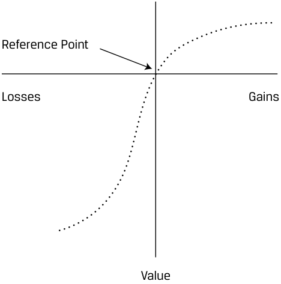
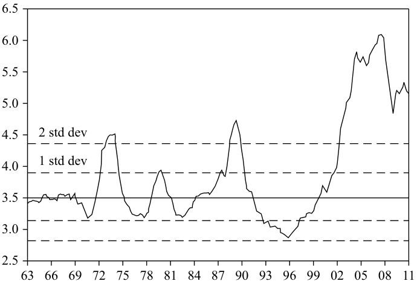

Learning Module 5 The Behavioral Biases of Individuals - Part 2: Emotional Biases
Volume 9: Portfolio Management
Learning Module 5 The Behavioral Biases of Individuals
Part 2/3: Emotional Biases (PDF Pages 227–242)
Tập 9: Quản lý Danh mục Đầu tư (Volume 9: Portfolio Management)
Học phần 5: Các Thiên lệch Hành vi của Cá nhân (Learning Module 5: The Behavioral Biases of Individuals)
Phần 2/3: Các Thiên lệch Cảm xúc (Emotional Biases) (Trang PDF 227–242)
-
C. Mental accounting
-
Solution:
-
C. Thiên lệch kế toán tâm lý (Mental accounting)
-
Lời giải:
B is correct. Confirmation bias refers to the tendency to seek confirming information and ignore contradictory information. Gerber did not adequately interpret the scientific results or the broader message of the article, choosing instead to focus on the reassuring concluding message that confirmed his existing beliefs.
- Gerber’s conclusion, upon re-examining ABC’s history, is most likely an example of which behavioral bias?
-
A. Confirmation
-
B. Hindsight
B là đáp án đúng. Thiên lệch xác nhận (confirmation bias) đề cập đến xu hướng tìm kiếm thông tin xác nhận và phớt lờ thông tin mâu thuẫn. Gerber đã không diễn giải một cách thỏa đáng các kết quả khoa học hoặc thông điệp rộng hơn của bài báo, mà thay vào đó lại chọn tập trung vào thông điệp kết luận mang tính trấn an vốn xác nhận cho những niềm tin hiện tại của ông.
C. Conservatism
- Kết luận của Gerber, sau khi xem xét lại lịch sử của ABC, có khả năng cao nhất là một ví dụ về thiên lệch hành vi nào?
-
A. Thiên lệch xác nhận (Confirmation)
-
B. Thiên lệch nhận thức muộn (Hindsight)
-
C. Thiên lệch bảo thủ (Conservatism)
Solution:
Lời giải:
B is correct. Hindsight bias is the result of selectively interpreting the past using knowledge of the present. Although Gerber should have implemented various mitigation strategies over the life of the investment, it is also true that investing, especially investing in a small-cap biotechnology company, is a probabilistic activity. Had Project M succeeded, Gerber may have been tempted to see the investment as evidence of his investment acumen, which would also be biased. The most useful examination of the past for Gerber would be investigating whether any mitigating actions or strategies would have been useful and putting them in place for subsequent investments.
B là đáp án đúng. Thiên lệch nhận thức muộn (hindsight bias) là kết quả của việc diễn giải có chọn lọc quá khứ bằng cách sử dụng sự hiểu biết của hiện tại. Mặc dù Gerber lẽ ra nên thực hiện các chiến lược giảm thiểu khác nhau trong suốt vòng đời của khoản đầu tư, nhưng cũng có một thực tế là hoạt động đầu tư, đặc biệt là đầu tư vào một công ty công nghệ sinh học vốn hóa nhỏ, là một hoạt động mang tính xác suất (probabilistic activity). Nếu Dự án M thành công, Gerber có thể đã bị cám dỗ coi khoản đầu tư này là bằng chứng cho sự nhạy bén trong đầu tư của mình, điều mà cũng sẽ mang tính thiên lệch. Việc kiểm tra quá khứ hữu ích nhất đối với Gerber sẽ là điều tra xem liệu có bất kỳ hành động hoặc chiến lược giảm thiểu nào có thể hữu ích hay không và đưa chúng vào áp dụng cho các khoản đầu tư tiếp theo.
EMOTIONAL BIASES
CÁC THIÊN LỆCH CẢM XÚC (EMOTIONAL BIASES)
4
4
discuss commonly recognized behavioral biases and their implications for financial decision making
Thảo luận về các thiên lệch hành vi thường được ghi nhận và những hàm ý của chúng đối với việc ra quyết định tài chính
We will now review six emotional biases, their implications for investment decision making, and suggestions for managing the effects of these biases. Emotional biases are harder to correct than cognitive errors because they originate from impulse or intuition rather than conscious calculations. It is often possible only to recognize the bias and adapt to it. The six emotional biases discussed are loss aversion, overconfidence, self-control, status quo, endowment, and regret aversion.
Bây giờ chúng ta sẽ xem xét sáu thiên lệch cảm xúc (emotional biases), những hàm ý của chúng đối với việc ra quyết định đầu tư, và các gợi ý để quản lý tác động của những thiên lệch này. Các thiên lệch cảm xúc khó điều chỉnh hơn các sai lầm nhận thức bởi vì chúng bắt nguồn từ sự bốc đồng (impulse) hoặc trực giác (intuition) hơn là những tính toán có ý thức. Thông thường, người ta chỉ có thể nhận diện thiên lệch và thích nghi (adapt) với nó. Sáu thiên lệch cảm xúc được thảo luận là: thiên lệch ác cảm thua lỗ (loss aversion), thiên lệch quá tự tin (overconfidence), thiên lệch tự kiểm soát (self-control), thiên lệch giữ nguyên hiện trạng (status quo), thiên lệch sở hữu (endowment), và thiên lệch ác cảm hối tiếc (regret aversion).
Loss-Aversion Bias
Thiên lệch Ác cảm Thua lỗ (Loss-Aversion Bias)
Loss-aversion bias refers to the tendency to strongly prefer avoiding losses to achieving gains. Rational FMPs should accept more risk to increase gains, not to mitigate losses. Paradoxically, in real life, FMPs instead tend to accept more risk to avoid losses than to achieve gains. Loss aversion leads FMPs to hold their losers to avoid recognizing losses and sell their winners to lock in profits.
Thiên lệch ác cảm thua lỗ (Loss-aversion bias) đề cập đến xu hướng ưu tiên mạnh mẽ việc tránh thua lỗ hơn là đạt được lợi nhuận. Các FMP hợp lý (rational) lẽ ra phải chấp nhận nhiều rủi ro hơn để gia tăng lợi nhuận, chứ không phải để giảm thiểu thua lỗ. Nghịch lý thay, trong thực tế, các FMP lại có xu hướng chấp nhận nhiều rủi ro hơn để tránh thua lỗ so với để đạt được lợi nhuận. Ác cảm thua lỗ dẫn đến việc các FMP nắm giữ các khoản đầu tư đang thua lỗ của họ để tránh phải ghi nhận khoản lỗ và bán đi các khoản đầu tư đang sinh lời để chốt lợi nhuận (lock in profits).
Kahneman and Tversky (1979) describe loss-averse investor behavior as the evaluation of gains and losses based on a reference point. A utility function that passes through this reference point appears in Exhibit 1. It is S-shaped and asymmetric, implying a greater impact of losses than of gains on utility for the same variation in absolute value. This utility function implies risk-seeking behavior in the domain of
Kahneman và Tversky (1979) mô tả hành vi của nhà đầu tư có ác cảm thua lỗ là việc đánh giá các khoản lãi và lỗ dựa trên một điểm tham chiếu (reference point). Một hàm hữu dụng (utility function) đi qua điểm tham chiếu này xuất hiện trong Minh họa 1 (Exhibit 1). Hàm này có dạng hình chữ S (S-shaped) và bất đối xứng (asymmetric), hàm ý rằng các khoản lỗ có tác động lớn hơn đến mức hữu dụng so với các khoản lãi đối với cùng một mức biến thiên về giá trị tuyệt đối. Hàm hữu dụng này hàm ý hành vi tìm kiếm rủi ro (risk-seeking behavior) trong miền
losses (below the horizontal axis) and risk avoidance in the domain of gains (above the horizontal axis). An important concept embedded in this utility representation is what has been termed the disposition effect : the holding of investments that have experienced losses too long, and the selling of investments that have experienced gains too quickly (i.e., holding on to losers and selling winners). The resulting portfolio may be riskier than the optimal portfolio based on the investor’s risk–return objectives.
thua lỗ (phía dưới trục hoành) và né tránh rủi ro (risk avoidance) trong miền lợi nhuận (phía trên trục hoành). Một khái niệm quan trọng nằm trong cách biểu diễn hàm hữu dụng này là điều được gọi là hiệu ứng vị thế (disposition effect): việc nắm giữ các khoản đầu tư đã bị thua lỗ quá lâu, và việc bán đi các khoản đầu tư đã có lãi quá nhanh (tức là giữ lại những kẻ thua cuộc và bán đi những người chiến thắng). Danh mục đầu tư kết quả có thể rủi ro hơn so với danh mục đầu tư tối ưu dựa trên các mục tiêu rủi ro – tỷ suất sinh lợi của nhà đầu tư.
Exhibit 1: Value Function of Loss Aversion
Minh họa 1: Hàm Giá trị của Ác cảm Thua lỗ (Exhibit 1: Value Function of Loss Aversion)

Chú thích hình ảnh: - Reference Point: Điểm tham chiếu - Losses / Gains (trục hoành): Thua lỗ / Lợi nhuận - Value (trục tung): Giá trị (Mức hữu dụng)
EXAMPLE 10
VÍ DỤ 10 (EXAMPLE 10)
Effects of Loss-Aversion Bias
Tác động của Thiên lệch Ác cảm Thua lỗ (Effects of Loss-Aversion Bias)
Loss-aversion bias, executed in practice as the disposition effect, is observed often by wealth management practitioners. The classic case of this bias is when an investor opens her monthly account statement and scans the individual investments for winners and losers. Seeing that some investments have lost money and others have gained, the investor is likely to respond by continuing to hold the losing investments. The idea of actually losing money is so painful that the first reaction is to hold the investment until it breaks even.
Thiên lệch ác cảm thua lỗ, được thực hiện trong thực tế dưới dạng hiệu ứng vị thế (disposition effect), thường xuyên được quan sát thấy bởi những người hành nghề quản lý gia sản. Trường hợp kinh điển của thiên lệch này là khi một nhà đầu tư mở bản sao kê tài khoản hàng tháng của cô ấy ra và rà soát từng khoản đầu tư riêng lẻ để tìm các khoản đang lãi (winners) và các khoản đang lỗ (losers). Khi thấy một số khoản đầu tư bị mất tiền và những khoản khác có lãi, nhà đầu tư có khả năng phản ứng bằng cách tiếp tục nắm giữ các khoản đầu tư đang thua lỗ. Ý nghĩ về việc thực sự bị mất tiền đau đớn đến mức phản ứng đầu tiên là giữ lại khoản đầu tư cho đến khi nó hòa vốn (breaks even).
The investor is acting based on emotions, not cognitive reasoning. In this case, if she did some research, the investor might learn that the company in question is experiencing difficulty and that holding the investment actually adds to the risk in the portfolio (hence the term risk-seeking in the domain of losses).
Nhà đầu tư đang hành động dựa trên cảm xúc, chứ không phải lập luận nhận thức. Trong trường hợp này, nếu cô ấy thực hiện một số nghiên cứu, nhà đầu tư có thể biết được rằng công ty đang xét đang gặp khó khăn và việc tiếp tục nắm giữ khoản đầu tư thực sự làm tăng thêm rủi ro trong danh mục đầu tư (do đó có thuật ngữ tìm kiếm rủi ro trong miền thua lỗ).
Conversely, the winners are making money. Loss-averse FMPs tend to sell these investments and realize their gains to avoid seeing gains evaporate. In this case, if the investor did some research, she might learn that the company in question actually improves the portfolio’s risk–return profile. By selling the investment, not only is the potential for future losses eliminated but the potential for future gains is also eliminated. Combining the added risk of holding the losers with the elimination of potential gains from selling the winners may make investors’ portfolios less efficient than portfolios based on fundamental analysis.
Ngược lại, các khoản đầu tư chiến thắng đang làm ra tiền. Các FMP có ác cảm thua lỗ có xu hướng bán những khoản đầu tư này và hiện thực hóa lợi nhuận (realize their gains) của họ để tránh nhìn thấy khoản lãi bốc hơi. Trong trường hợp này, nếu nhà đầu tư thực hiện một số nghiên cứu, cô ấy có thể biết được rằng công ty đang xét thực sự cải thiện hồ sơ rủi ro – tỷ suất sinh lợi của danh mục đầu tư. Bằng cách bán khoản đầu tư, không chỉ tiềm năng thua lỗ trong tương lai bị loại bỏ mà tiềm năng sinh lời trong tương lai cũng bị triệt tiêu. Việc kết hợp giữa rủi ro tăng thêm của việc nắm giữ các khoản thua lỗ với việc loại bỏ lợi nhuận tiềm năng do bán đi các khoản chiến thắng có thể làm cho danh mục đầu tư của các nhà đầu tư kém hiệu quả hơn so với các danh mục đầu tư dựa trên phân tích cơ bản.
Consequences of Loss Aversion
Hệ quả của Ác cảm Thua lỗ (Consequences of Loss Aversion)
As a result of loss-aversion bias, FMPs may do the following:
Do hậu quả của thiên lệch ác cảm thua lỗ, các FMP có thể thực hiện những điều sau:
-
Hold investments in a loss position longer than justified by fundamental analysis, in the hope that they will return to breakeven.
-
Sell investments in a gain position earlier than justified by fundamental analysis, out of fear that the gains will erode.
-
Nắm giữ các khoản đầu tư đang ở vị thế lỗ lâu hơn mức được biện minh bởi phân tích cơ bản, với hy vọng rằng chúng sẽ quay trở lại điểm hòa vốn (breakeven).
-
Bán các khoản đầu tư đang ở vị thế lãi sớm hơn mức được biện minh bởi phân tích cơ bản, vì lo sợ rằng các khoản lãi đó sẽ bị xói mòn.
Detection of and Guidelines for Overcoming Loss Aversion
Cách Phát hiện và Hướng dẫn Khắc phục Ác cảm Thua lỗ (Detection of and Guidelines for Overcoming Loss Aversion)
A disciplined approach to investment is a good way to alleviate the impact of the loss-aversion bias. It is impossible to make experiencing losses any less painful emotionally, but analyzing investments and realistically considering the probabilities of future losses and gains may help guide the FMP to a rational decision.
Một cách tiếp cận có kỷ luật đối với hoạt động đầu tư là một cách tốt để làm dịu bớt tác động của thiên lệch ác cảm thua lỗ. Không thể làm cho việc trải qua thua lỗ bớt đau đớn hơn về mặt cảm xúc, nhưng việc phân tích các khoản đầu tư và xem xét một cách thực tế xác suất của các khoản lỗ và lãi trong tương lai có thể giúp hướng dẫn FMP đi đến một quyết định hợp lý.
Overconfidence Bias
Thiên lệch Quá Tự tin (Overconfidence Bias)
Overconfidence bias is a bias in which people demonstrate unwarranted faith in their own abilities. Overconfidence may be intensified when combined with self-attribution bias , in which people take too much credit for successes ( self-enhancing ) and assign responsibility to others for failures ( self-protecting ). Overconfidence has aspects of both cognitive and emotional errors but is classified as emotional because the bias primarily results from emotion.
Thiên lệch quá tự tin (Overconfidence bias) là một thiên lệch trong đó con người thể hiện niềm tin không có cơ sở (unwarranted faith) vào khả năng của chính mình. Sự quá tự tin có thể trở nên trầm trọng hơn khi kết hợp với thiên lệch tự quy kết (self-attribution bias), trong đó con người nhận quá nhiều công trạng về mình đối với những thành công (tự đề cao bản thân – self-enhancing) và đổ trách nhiệm cho người khác hoặc các yếu tố bên ngoài đối với những thất bại (tự bảo vệ bản thân – self-protecting). Sự quá tự tin mang các khía cạnh của cả sai lầm nhận thức và thiên lệch cảm xúc, nhưng được phân loại là thiên lệch cảm xúc bởi vì thiên lệch này chủ yếu bắt nguồn từ cảm xúc.
Overconfidence bias has two forms: prediction overconfidence and certainty overconfidence . Both types demonstrate faulty reasoning combined with “gut feel” and hope. Prediction overconfidence occurs when the confidence intervals that FMPs assign to their investment predictions are too narrow. For example, when estimating the future value of a stock, overconfident FMPs will incorporate far too little variation—using a narrower range of expected payoffs and a lower standard deviation of returns—than justified by historical results and fundamental analysis.
Thiên lệch quá tự tin có hai dạng: quá tự tin trong dự đoán (prediction overconfidence) và quá tự tin về sự chắc chắn (certainty overconfidence). Cả hai dạng đều thể hiện sự lập luận sai lầm kết hợp với “cảm tính” (gut feel) và sự hy vọng. Quá tự tin trong dự đoán (prediction overconfidence) xảy ra khi các khoảng tin cậy (confidence intervals) mà các FMP gán cho các dự đoán đầu tư của họ quá hẹp. Ví dụ, khi ước tính giá trị tương lai của một cổ phiếu, các FMP quá tự tin sẽ kết hợp quá ít sự biến thiên — sử dụng một khoảng kết quả kỳ vọng hẹp hơn và độ lệch chuẩn của tỷ suất sinh lợi thấp hơn — so với mức được biện minh bởi các kết quả lịch sử và phân tích cơ bản.
Certainty overconfidence occurs when the probabilities that FMPs assign to outcomes are too high. This certainty is often an emotional response rather than a cognitive evaluation.
Quá tự tin về sự chắc chắn (certainty overconfidence) xảy ra khi các xác suất mà các FMP gán cho các kết quả là quá cao. Sự chắc chắn này thường là một phản ứng cảm xúc hơn là một sự đánh giá nhận thức.
EXAMPLE 11
VÍ DỤ 11 (EXAMPLE 11)
Overconfidence Bias
Thiên lệch Quá Tự tin (Overconfidence Bias)
An analyst estimates that the price of oil will increase by 40% over the next 12 months because prevailing prices are lower than many oil producers’ cost of production. Unprofitable producers reducing production will eventually put upward pressure on prices so long as oil demand remains stable or increases. Based on this forecast, the analyst recommends several high-yield bonds of oil producers to a portfolio manager.
Một chuyên gia phân tích ước tính rằng giá dầu sẽ tăng 40% trong vòng 12 tháng tới bởi vì mức giá hiện hành đang thấp hơn chi phí sản xuất của nhiều nhà sản xuất dầu mỏ. Việc các nhà sản xuất không có lợi nhuận cắt giảm sản lượng cuối cùng sẽ tạo áp lực đẩy giá lên cao miễn là nhu cầu dầu mỏ vẫn ổn định hoặc tăng lên. Dựa trên dự báo này, chuyên gia phân tích khuyến nghị một số trái phiếu lợi suất cao (high-yield bonds) của các nhà sản xuất dầu mỏ cho một nhà quản lý danh mục đầu tư.
The portfolio manager asks the analyst for an estimate of downside risk: “How much could we lose if, say, the oil price falls another 10%?” The analyst replies, “That is unrealistic. The current oil price is as low as it can go, and yields on these bonds are as attractive as they will ever be. We must make the investment now. There is no credible downside case.”
Nhà quản lý danh mục đầu tư yêu cầu chuyên gia phân tích đưa ra ước tính về rủi ro giảm giá (downside risk): “Chúng ta có thể mất bao nhiêu nếu, giả sử, giá dầu giảm thêm 10% nữa?” Chuyên gia phân tích trả lời: “Điều đó là phi thực tế. Giá dầu hiện tại đã ở mức thấp nhất có thể rồi, và lợi suất trên những trái phiếu này đang hấp dẫn hơn bao giờ hết. Chúng ta phải thực hiện khoản đầu tư ngay bây giờ. Không có kịch bản giảm giá nào đáng tin cậy cả.”
The analyst is exhibiting overconfidence bias by placing excessive certainty in his prediction and not considering the likelihood or impact of variance from that prediction.
Chuyên gia phân tích đang thể hiện thiên lệch quá tự tin (overconfidence bias) bằng cách đặt sự chắc chắn quá mức vào dự đoán của mình và không xem xét khả năng xảy ra hoặc tác động của sự sai lệch so với dự đoán đó.
Consequences of Overconfidence Bias
Hệ quả của Thiên lệch Quá Tự tin (Consequences of Overconfidence Bias)
As a result of overconfidence bias, FMPs may do the following:
Do hậu quả của thiên lệch quá tự tin, các FMP có thể thực hiện những điều sau:
-
Underestimate risks and overestimate expected returns.
-
Hold poorly diversified portfolios, which may result in significant downside risk.
-
Đánh giá thấp rủi ro (underestimate risks) và đánh giá quá cao tỷ suất sinh lợi kỳ vọng (overestimate expected returns).
-
Nắm giữ các danh mục đầu tư kém đa dạng hóa, điều này có thể dẫn đến rủi ro giảm giá đáng kể.
Detection of and Guidelines for Overcoming Overconfidence Bias
Cách Phát hiện và Hướng dẫn Khắc phục Thiên lệch Quá Tự tin (Detection of and Guidelines for Overcoming Overconfidence Bias)
FMPs should review their trading records, identify both the winners and losers, and calculate portfolio performance over at least two years. Investors with an unfounded belief in their own ability to identify good investments may recall winners and their results but underestimate the number and results of their losers. This review will also identify the amount of trading. Overconfidence is also a cognitive error, and so more-complete information can often help FMPs understand the error of their ways.
Các FMP nên xem xét lại lịch sử giao dịch (trading records) của mình, xác định cả các khoản đầu tư thắng và thua, đồng thời tính toán thành quả danh mục đầu tư trong ít nhất hai năm. Các nhà đầu tư có niềm tin không có cơ sở vào khả năng tự xác định các khoản đầu tư tốt của bản thân có thể nhớ lại các khoản thắng và kết quả của chúng nhưng lại đánh giá thấp số lượng và kết quả của các khoản thua lỗ. Việc rà soát này cũng sẽ xác định được khối lượng giao dịch. Sự quá tự tin cũng mang tính chất của một sai lầm nhận thức, và do đó thông tin đầy đủ hơn thường có thể giúp các FMP hiểu được sai lầm trong cách làm của họ.
It is critical that investors be objective when making and evaluating investment decisions. As an old Wall Street adage states, “Don’t confuse brains with a bull market.” It is advisable to view the reasoning behind and the results of investments, both winners and losers, as objectively as possible. When did you make money? When did you lose money? Mentally separate your good money-making decisions from your bad ones. Then, review the beneficial decisions and try to discern what, exactly, you did correctly. Did you purchase an investment at a particularly advantageous time based on fundamentals, or did you luck out by timing a market upswing? Similarly, review the decisions that you categorized as poor. Did you invest aptly based on fundamentals and then make an error when it came time to sell, or was the market going through a correction?
Điều tối quan trọng là các nhà đầu tư phải khách quan khi đưa ra và đánh giá các quyết định đầu tư. Như một câu ngạn ngữ cổ ở Phố Wall đã nói: “Đừng nhầm lẫn trí tuệ với một thị trường giá lên” (“Don’t confuse brains with a bull market”). Lời khuyên là nên nhìn nhận lập luận đằng sau và kết quả của các khoản đầu tư, cả thắng lẫn thua, một cách khách quan nhất có thể. Khi nào bạn kiếm được tiền? Khi nào bạn bị mất tiền? Hãy tách biệt trong tâm trí các quyết định kiếm tiền tốt của bạn khỏi những quyết định tồi. Sau đó, hãy xem xét lại các quyết định có lợi và cố gắng nhận thức rõ xem chính xác thì bạn đã làm đúng điều gì. Bạn đã mua một khoản đầu tư vào một thời điểm đặc biệt thuận lợi dựa trên các yếu tố cơ bản, hay bạn đã gặp may nhờ chọn đúng thời điểm thị trường đi lên (market upswing)? Tương tự, hãy xem xét lại các quyết định mà bạn đã phân loại là kém. Bạn đã đầu tư một cách khéo léo dựa trên các yếu tố cơ bản rồi sau đó mắc lỗi khi đến thời điểm bán, hay thị trường đang trải qua một đợt điều chỉnh (correction)?
When reviewing unprofitable decisions, look for patterns or common mistakes that perhaps you were unaware you were making. Note any such tendencies that you discover, and try to remain mindful of them by brainstorming a rule or reminder such as: “I will do X in the future” or “I will not do Y in the future.”
Khi xem xét lại các quyết định không sinh lời, hãy tìm kiếm các khuôn mẫu (patterns) hoặc những sai lầm phổ biến mà có lẽ bạn đã không nhận thức được là mình đang mắc phải. Hãy ghi chú lại bất kỳ khuynh hướng nào như vậy mà bạn phát hiện ra, và cố gắng luôn lưu tâm đến chúng bằng cách vạch ra một quy tắc hoặc lời nhắc nhở chẳng hạn như: “Tôi sẽ làm X trong tương lai” hoặc “Tôi sẽ không làm Y trong tương lai.”
Self-Control Bias
Thiên lệch Tự Kiểm soát (Self-Control Bias)
Self-control bias is a bias in which people fail to act in pursuit of their long-term, overarching goals in favor of short-term satisfaction. For example, individuals pursuing the CFA charter may fail to study sufficiently because of short-term competing demands on their time. Rational behavior suggests that people would do whatever is necessary to achieve their long-term goals, but it often does not happen.
Thiên lệch tự kiểm soát (Self-control bias) là một thiên lệch trong đó con người thất bại trong việc hành động nhằm theo đuổi các mục tiêu dài hạn, bao trùm của mình để đổi lấy sự thỏa mãn ngắn hạn (short-term satisfaction). Ví dụ, những cá nhân đang theo đuổi chứng chỉ CFA có thể không học tập đủ nhiều vì những nhu cầu cạnh tranh ngắn hạn đối với thời gian của họ. Hành vi hợp lý gợi ý rằng con người sẽ làm bất cứ điều gì cần thiết để đạt được mục tiêu dài hạn của mình, nhưng điều đó thường không xảy ra.
When it comes to money, many people are willing and able to save for the future, but they often have difficulty sacrificing present consumption because of a lack of self-control. This apparent lack of self-control may also be a function of hyperbolic discounting, the human tendency to prefer small payoffs now compared with larger payoffs in the future. Sacrifices in the present require much greater payoffs in the future; otherwise, people will be unwilling to make current sacrifices.
Khi nói đến tiền bạc, nhiều người sẵn sàng và có khả năng tiết kiệm cho tương lai, nhưng họ thường gặp khó khăn trong việc hy sinh tiêu dùng hiện tại vì thiếu sự tự kiểm soát. Sự thiếu tự kiểm soát bề ngoài này cũng có thể là một hàm số của việc chiết khấu hyperbol (hyperbolic discounting), tức xu hướng của con người thích những khoản tiền thưởng nhỏ ngay bây giờ hơn là những khoản tiền thưởng lớn hơn trong tương lai. Những sự hy sinh ở hiện tại đòi hỏi những phần thưởng lớn hơn rất nhiều trong tương lai; nếu không, con người sẽ không sẵn lòng thực hiện những sự hy sinh ở hiện tại.
Consequences of Self-Control Bias
Hệ quả của Thiên lệch Tự Kiểm soát (Consequences of Self-Control Bias)
As a result of self-control bias, FMPs may do the following:
Do hậu quả của thiên lệch tự kiểm soát, các FMP có thể thực hiện những điều sau:
-
Save insufficiently for the future, which may, in turn, result in accepting too much risk in portfolios in an attempt to generate higher returns.
-
Borrow excessively to finance present consumption.
-
Tiết kiệm không đủ cho tương lai, điều này đến lượt nó có thể dẫn đến việc chấp nhận quá nhiều rủi ro trong danh mục đầu tư trong một nỗ lực nhằm tạo ra tỷ suất sinh lợi cao hơn.
-
Vay mượn quá mức để tài trợ cho tiêu dùng hiện tại.
Detection of and Guidelines for Overcoming Self-Control Bias
Cách Phát hiện và Hướng dẫn Khắc phục Thiên lệch Tự Kiểm soát (Detection of and Guidelines for Overcoming Self-Control Bias)
FMPs should ensure that a proper investment plan is in place and should have a personal budget. Plans need to be in writing, so that they can be reviewed regularly. Similarly, FMPs should look to maintain a strategic asset allocation based on a thorough evaluation.
Các FMP nên đảm bảo rằng một kế hoạch đầu tư phù hợp đã được thiết lập và nên có một ngân sách cá nhân. Các kế hoạch cần phải được lập thành văn bản để có thể được rà soát thường xuyên. Tương tự, các FMP nên hướng tới việc duy trì một sự phân bổ tài sản chiến lược (strategic asset allocation) dựa trên một sự đánh giá kỹ lưỡng.
Status Quo Bias
Thiên lệch Giữ nguyên Hiện trạng (Status Quo Bias)
Status quo bias is an emotional bias in which people choose to do nothing (i.e., maintain the “status quo”) instead of making a change, even when change is warranted. Status quo bias is often discussed in tandem with endowment and regret-aversion biases because an outcome of the biases, maintaining existing positions, is similar. The reasons for maintaining the existing positions differ, however. In the status quo bias, positions are maintained largely because of inertia rather than conscious choice. In endowment and regret-aversion biases, positions are maintained because of conscious, but possibly incorrect, choices.
Thiên lệch giữ nguyên hiện trạng (Status quo bias) là một thiên lệch cảm xúc trong đó con người chọn không làm gì cả (tức là duy trì “hiện trạng” – status quo) thay vì thực hiện một sự thay đổi, ngay cả khi sự thay đổi là cần thiết và chính đáng. Thiên lệch giữ nguyên hiện trạng thường được thảo luận song hành với thiên lệch sở hữu (endowment bias) và thiên lệch ác cảm hối tiếc (regret-aversion bias) bởi vì một kết quả của các thiên lệch này — việc duy trì các vị thế hiện tại — là tương tự nhau. Tuy nhiên, lý do của việc duy trì các vị thế hiện tại lại khác nhau. Trong thiên lệch giữ nguyên hiện trạng, các vị thế được duy trì phần lớn là do sức ỳ/quán tính (inertia) hơn là do sự lựa chọn có ý thức. Trong thiên lệch sở hữu và thiên lệch ác cảm hối tiếc, các vị thế được duy trì vì những lựa chọn có ý thức, nhưng có thể không chính xác.
EXAMPLE 12
VÍ DỤ 12 (EXAMPLE 12)
The Path of Least Resistance
Con đường Ít Kháng cự Nhất (The Path of Least Resistance)
Using data from three firms, Choi et al. (2001) studied the impact of automatically enrolling employees in a defined contribution pension plan and how default contribution rates and investment options affect participants’ behavior.
Sử dụng dữ liệu từ ba công ty, Choi và cộng sự (2001) đã nghiên cứu tác động của việc tự động đăng ký (automatically enrolling) cho nhân viên tham gia vào một chương trình hưu trí đóng góp xác định (defined contribution pension plan) và cách thức mà các mức tỷ lệ đóng góp mặc định cũng như các lựa chọn đầu tư mặc định ảnh hưởng đến hành vi của người tham gia.
Automatic enrollment increased employee participation in the defined contribution plan from 26%–43% after six months’ tenure and 57%–69% after three years’ tenure to >85% for both tenures at all three firms.
Việc tự động đăng ký đã làm tăng tỷ lệ tham gia của nhân viên vào chương trình đóng góp xác định từ mức 26%–43% sau sáu tháng làm việc và 57%–69% sau ba năm làm việc lên mức $>85\%$ đối với cả hai mốc thâm niên tại cả ba công ty.
Although automatic enrollment increased participation, more than 65% of employees tended to contribute the employer-specified default amount—2% or 3%—and remained in the default investment option. Although this percentage declined slowly over time, even after two years of tenure, more than 40% of participants continued to use the default.
Mặc dù việc tự động đăng ký làm tăng tỷ lệ tham gia, nhưng hơn 65% nhân viên có xu hướng đóng góp ở mức mặc định do người sử dụng lao động quy định — 2% hoặc 3% — và giữ nguyên ở lựa chọn đầu tư mặc định. Mặc dù tỷ lệ phần trăm này giảm dần theo thời gian, nhưng ngay cả sau hai năm làm việc, hơn 40% người tham gia vẫn tiếp tục sử dụng lựa chọn mặc định.
Consequences of Status Quo Bias
Hệ quả của Thiên lệch Giữ nguyên Hiện trạng (Consequences of Status Quo Bias)
As a result of status quo bias, FMPs may do the following:
Do hậu quả của thiên lệch giữ nguyên hiện trạng, các FMP có thể thực hiện những điều sau:
-
Unknowingly maintain portfolios with risk characteristics that are inappropriate for their circumstances.
-
Fail to explore other opportunities.
-
Vô tình duy trì các danh mục đầu tư có đặc điểm rủi ro không phù hợp với hoàn cảnh của họ.
-
Không khám phá các cơ hội khác.
Detection of and Guidelines for Overcoming Status Quo Bias
Cách Phát hiện và Hướng dẫn Khắc phục Thiên lệch Giữ nguyên Hiện trạng (Detection of and Guidelines for Overcoming Status Quo Bias)
Status quo bias may be exceptionally strong and difficult to overcome. Education is essential. FMPs should quantify the risk-reducing and return-enhancing advantages of diversification and proper asset allocation. For example, with a concentrated stock position, showing what can happen to overall wealth levels if the stock collapses may persuade an FMP to diversify.
Thiên lệch giữ nguyên hiện trạng có thể đặc biệt mạnh mẽ và khó khắc phục. Giáo dục là yếu tố thiết yếu. Các FMP nên lượng hóa những lợi thế giảm thiểu rủi ro và nâng cao tỷ suất sinh lợi của việc đa dạng hóa và phân bổ tài sản hợp lý. Ví dụ, đối với một vị thế cổ phiếu tập trung, việc chỉ ra điều gì có thể xảy ra với mức tổng tài sản nếu cổ phiếu đó sụp đổ có thể thuyết phục được một FMP thực hiện đa dạng hóa.
Endowment Bias
Thiên lệch Sở hữu (Endowment Bias)
Endowment bias is an emotional bias in which people value an asset more when they own it than when they do not. Endowment bias is inconsistent with standard economic theory, which asserts that the price a person is willing to pay for a good should equal the price at which that person would be willing to sell the same good. Psychologists have found, however, that people tend to state minimum selling prices for a good that exceed maximum purchase prices that they are willing to pay for the same good. Effectively, ownership “endows” the asset with added value.
Thiên lệch sở hữu (Endowment bias) là một thiên lệch cảm xúc trong đó con người định giá một tài sản cao hơn khi họ sở hữu nó so với khi họ không sở hữu nó. Thiên lệch sở hữu không nhất quán với lý thuyết kinh tế tiêu chuẩn, vốn khẳng định rằng mức giá mà một người sẵn lòng trả (willing to pay) cho một hàng hóa phải bằng với mức giá mà tại đó người đó sẵn lòng bán (willing to sell) cùng hàng hóa đó. Tuy nhiên, các nhà tâm lý học đã phát hiện ra rằng con người có xu hướng nêu ra mức giá bán tối thiểu cho một hàng hóa vượt quá mức giá mua tối đa mà họ sẵn lòng trả cho cùng hàng hóa đó. Trên thực tế, quyền sở hữu đã “ban tặng” (endows) cho tài sản đó một giá trị cộng thêm.
Endowment bias may be the result of several other behavioral biases, such as loss aversion, anchoring and adjustment, and overconfidence. Despite the name, purchased as well as inherited securities can be subject to endowment bias.
Thiên lệch sở hữu có thể là kết quả của một số thiên lệch hành vi khác, chẳng hạn như ác cảm thua lỗ, neo giữ và điều chỉnh, và quá tự tin. Bất chấp tên gọi của nó (vốn gợi liên tưởng đến tài sản thừa kế/hiến tặng), cả những chứng khoán được mua lẫn chứng khoán được thừa kế đều có thể chịu ảnh hưởng của thiên lệch sở hữu.
EXAMPLE 13
VÍ DỤ 13 (EXAMPLE 13)
Endowment Bias
Thiên lệch Sở hữu (Endowment Bias)
Several of an investment analyst’s recommended stocks have done well for the past five years, prompting the portfolio manager to ask for a brief update on each, including valuations. For each stock, the analyst estimates that fair value is at least another 40% above the current price. The portfolio manager challenges the analyst by pointing out that the fair value estimates imply valuation multiples that are at least two standard deviations above the five-year average and are well above even the most bullish sell-side analyst’s target price. The analyst responds by saying that the market is overlooking these companies’ fundamentals. The portfolio manager then asks, “Would you buy these shares today?” The analyst answers, “Probably not.”
Một số cổ phiếu được khuyến nghị bởi một chuyên gia phân tích đầu tư đã có thành quả tốt trong năm năm qua, thúc đẩy nhà quản lý danh mục đầu tư yêu cầu một bản cập nhật ngắn gọn về từng cổ phiếu, bao gồm cả phần định giá. Đối với mỗi cổ phiếu, chuyên gia phân tích ước tính rằng giá trị hợp lý (fair value) cao hơn ít nhất 40% nữa so với mức giá hiện tại. Nhà quản lý danh mục đầu tư chất vấn chuyên gia phân tích bằng cách chỉ ra rằng các ước tính giá trị hợp lý đó hàm ý các hệ số nhân định giá (valuation multiples) cao hơn ít nhất hai độ lệch chuẩn so với mức trung bình năm năm và cao hơn nhiều so với ngay cả mức giá mục tiêu của chuyên gia phân tích bên bán (sell-side analyst) lạc quan nhất. Chuyên gia phân tích phản hồi bằng cách nói rằng thị trường đang bỏ qua các yếu tố cơ bản của những công ty này. Nhà quản lý danh mục đầu tư sau đó hỏi: “Anh có mua những cổ phiếu này ngày hôm nay không?” Chuyên gia phân tích trả lời: “Có lẽ là không.”
The analyst is likely exhibiting endowment bias by overestimating the value of shares already owned in the portfolio. This bias is likely the result of having successfully invested in the shares.
Chuyên gia phân tích nhiều khả năng đang thể hiện thiên lệch sở hữu (endowment bias) bằng cách đánh giá quá cao giá trị của những cổ phiếu đã được sở hữu sẵn trong danh mục đầu tư. Thiên lệch này nhiều khả năng là kết quả của việc đã đầu tư thành công vào các cổ phiếu đó.
Consequences of Endowment Bias
Hệ quả của Thiên lệch Sở hữu (Consequences of Endowment Bias)
Endowment bias may lead FMPs to do the following:
Thiên lệch sở hữu có thể dẫn đến việc các FMP thực hiện những điều sau:
-
Fail to sell certain assets and replace them with other assets.
-
Continue to hold classes of assets with which they are familiar. FMPs may believe they understand the characteristics of the investments they already own and may be reluctant to purchase assets with which they have less experience. Familiarity adds to owners’ perceived value of a security.
-
As a result, the FMP may maintain an inappropriate asset allocation. The portfolio may be inappropriate for investors’ levels of risk tolerance and financial goals.
-
Không bán đi một số tài sản nhất định và thay thế chúng bằng các tài sản khác.
-
Tiếp tục nắm giữ các loại tài sản mà họ quen thuộc. Các FMP có thể tin rằng họ hiểu rõ đặc điểm của các khoản đầu tư mà họ đã sở hữu và có thể miễn cưỡng mua các tài sản mà họ có ít kinh nghiệm hơn. Sự quen thuộc làm tăng thêm giá trị cảm nhận của người sở hữu đối với một chứng khoán.
-
Kết quả là, FMP có thể duy trì một sự phân bổ tài sản không phù hợp. Danh mục đầu tư có thể không phù hợp với mức độ chấp nhận rủi ro và các mục tiêu tài chính của nhà đầu tư.
Detection of and Guidelines for Overcoming Endowment Bias
Cách Phát hiện và Hướng dẫn Khắc phục Thiên lệch Sở hữu (Detection of and Guidelines for Overcoming Endowment Bias)
Many wealth management practitioners have encountered clients who are reluctant to sell securities bequeathed by previous generations. Often in these situations, investors cite feelings of disloyalty associated with the prospect of selling inherited securities, general uncertainty in determining the right choice, and concerns about tax issues. An FMP should ask, “If an equivalent sum to the value of the investments inherited had been received in cash, how would you invest the cash?” Often, the answer is into a very different investment portfolio than the one inherited. It may also be useful to explore the deceased’s intent in owning the investment and bequeathing it. “Was the
Nhiều người hành nghề quản lý gia sản đã từng gặp những khách hàng miễn cưỡng bán đi các chứng khoán được để lại từ các thế hệ trước. Thường trong những tình huống này, các nhà đầu tư viện dẫn cảm giác không trung thành/bội bạc gắn liền với viễn cảnh bán đi các chứng khoán thừa kế, sự bất định chung trong việc xác định lựa chọn đúng đắn, và những lo ngại về các vấn đề thuế. Một FMP nên đặt câu hỏi: “Nếu bạn nhận được một khoản tiền mặt tương đương với giá trị của các khoản đầu tư được thừa kế, bạn sẽ đầu tư khoản tiền mặt đó như thế nào?” Thông thường, câu trả lời là đầu tư vào một danh mục đầu tư rất khác so với danh mục được thừa kế. Cũng có thể hữu ích khi khám phá ý định của người quá cố khi sở hữu khoản đầu tư và để lại nó cho người thừa kế. “Có phải
primary intent to leave the specific investment portfolio because it was perceived to be a suitable investment based on fundamental analysis, or was it to leave financial resources to benefit the heirs?” Heirs who affirm the latter conclusion are receptive to considering alternative asset allocations.
ý định chính là để lại danh mục đầu tư cụ thể đó bởi vì nó được nhận thức là một khoản đầu tư phù hợp dựa trên phân tích cơ bản, hay ý định là để lại các nguồn lực tài chính nhằm mang lại lợi ích cho những người thừa kế?” Những người thừa kế khẳng định kết luận thứ hai sẽ cởi mở trong việc xem xét các phương án phân bổ tài sản thay thế.
An effective way to address endowment bias for purchased securities, when an estimated “sell price” is far higher than any reasonable FMP’s estimate of a “buy price” is to ask, “Would you buy this security today at the current price?” A similar question is, “Why are you not buying more of this security today?” Answering these questions can turn the focus away from the past to the present, toward considering the upside from the current price.
Một cách hiệu quả để giải quyết thiên lệch sở hữu đối với các chứng khoán được mua, khi một “mức giá bán” ước tính cao hơn rất nhiều so với ước tính của bất kỳ FMP hợp lý nào về một “mức giá mua”, là đặt câu hỏi: “Bạn có mua chứng khoán này ngày hôm nay ở mức giá hiện tại không?” Một câu hỏi tương tự là: “Tại sao hôm nay bạn không mua thêm chứng khoán này?” Việc trả lời những câu hỏi này có thể chuyển sự tập trung ra khỏi quá khứ để hướng về hiện tại, hướng tới việc xem xét tiềm năng tăng giá (upside) tính từ mức giá hiện tại.
Regret-Aversion Bias
Thiên lệch Ác cảm Hối tiếc (Regret-Aversion Bias)
Regret-aversion bias is an emotional bias in which people tend to avoid making decisions out of fear that the decision will turn out poorly. Regret-aversion bias has two dimensions: actions that people take and actions that people could have taken. Regret is more intense when the unfavorable outcomes are the result of an action taken versus the result of an action not taken. Thus, no action becomes the default decision.
Thiên lệch ác cảm hối tiếc (Regret-aversion bias) là một thiên lệch cảm xúc trong đó con người có xu hướng tránh đưa ra quyết định vì lo sợ rằng quyết định đó sẽ mang lại kết quả tồi tệ. Thiên lệch ác cảm hối tiếc có hai chiều cạnh: những hành động mà con người thực sự làm (actions that people take – lỗi do hành động / error of commission) và những hành động mà con người lẽ ra đã có thể làm (actions that people could have taken – lỗi do không hành động / error of omission). Sự hối tiếc sẽ mãnh liệt hơn khi các kết quả bất lợi là kết quả của một hành động đã được thực hiện so với kết quả của một hành động đã không được thực hiện. Do đó, việc không hành động trở thành quyết định mặc định.
Consequences of Regret-Aversion Bias
Hệ quả của Thiên lệch Ác cảm Hối tiếc (Consequences of Regret-Aversion Bias)
As a result of regret-aversion bias, FMPs may do the following:
Do hậu quả của thiên lệch ác cảm hối tiếc, các FMP có thể thực hiện những điều sau:
-
Be too conservative in their investment choices as a result of poor outcomes on risky investments in the past. FMPs may wish to avoid the regret of making another bad investment and decide that low-risk instruments are better. This behavior can lead to long-term underperformance and failure to reach investment goals.
-
Engage in herding behavior. FMPs may feel safer in popular investments in order to limit potential future regret. It seems safe to be with the crowd, and a reduction in potential emotional pain is perceived. Regret aversion may lead to preference for stocks of well-known companies even in the face of equal risk and return expectations. Choosing the stocks of less-familiar companies is perceived as riskier and involves more personal responsibility and greater potential for regret. As John Maynard Keynes (1936) wrote, “Worldly wisdom teaches that it is better for reputation to fail conventionally than to succeed unconventionally.”
-
Quá bảo thủ/thận trọng trong các lựa chọn đầu tư của mình do những kết quả tồi tệ từ các khoản đầu tư rủi ro trong quá khứ. Các FMP có thể muốn tránh sự hối tiếc của việc thực hiện một khoản đầu tư tồi tệ khác và quyết định rằng các công cụ rủi ro thấp thì tốt hơn. Hành vi này có thể dẫn đến thành quả kém hiệu quả trong dài hạn và không đạt được các mục tiêu đầu tư.
-
Tham gia vào hành vi bầy đàn (herding behavior). Các FMP có thể cảm thấy an toàn hơn trong các khoản đầu tư phổ biến nhằm hạn chế sự hối tiếc tiềm tàng trong tương lai. Có vẻ như sẽ an toàn khi đi cùng đám đông, và họ cảm nhận được sự sụt giảm trong nỗi đau cảm xúc tiềm ẩn. Ác cảm hối tiếc có thể dẫn đến sự ưa thích đối với cổ phiếu của các công ty nổi tiếng ngay cả khi đối mặt với kỳ vọng rủi ro và tỷ suất sinh lợi ngang bằng nhau. Việc lựa chọn cổ phiếu của các công ty ít quen thuộc hơn được nhận thức là rủi ro hơn và kéo theo nhiều trách nhiệm cá nhân hơn cùng tiềm năng hối tiếc lớn hơn. Như John Maynard Keynes (1936) đã viết: “Sự khôn ngoan thế tục dạy rằng đối với danh tiếng, thà thất bại theo lối truyền thống còn hơn là thành công theo cách phi truyền thống.”
Detection of and Guidelines for Overcoming Regret-Aversion Bias
Cách Phát hiện và Hướng dẫn Khắc phục Thiên lệch Ác cảm Hối tiếc (Detection of and Guidelines for Overcoming Regret-Aversion Bias)
FMPs should quantify the risk-reducing and return-enhancing advantages of diversification and proper asset allocation. Regret aversion can cause some FMPs to invest too conservatively or too riskily depending on the current trends. With proper diversification, FMPs will accept the appropriate level of risk in their portfolios depending, of course, on return objectives. To prevent investments from being too conservative, FMPs must recognize that losses happen to everyone and keep in mind the long-term benefits of including risky assets in portfolios. Recognizing that bubbles happen and keeping in mind long-term objectives will prevent a client from making investments that are too risky.
Các FMP nên lượng hóa những lợi thế giảm thiểu rủi ro và nâng cao tỷ suất sinh lợi của việc đa dạng hóa và phân bổ tài sản hợp lý. Ác cảm hối tiếc có thể khiến một số FMP đầu tư quá thận trọng hoặc quá rủi ro tùy thuộc vào các xu hướng hiện hành. Với sự đa dạng hóa hợp lý, các FMP sẽ chấp nhận mức độ rủi ro phù hợp trong danh mục đầu tư của họ, tất nhiên là tùy thuộc vào các mục tiêu tỷ suất sinh lợi. Để ngăn ngừa việc các khoản đầu tư trở nên quá thận trọng, các FMP phải nhận thức được rằng thua lỗ xảy ra với tất cả mọi người và phải luôn ghi nhớ những lợi ích dài hạn của việc đưa các tài sản rủi ro vào danh mục đầu tư. Việc nhận thức được rằng các bong bóng (bubbles) vẫn xảy ra và luôn ghi nhớ các mục tiêu dài hạn sẽ ngăn cản khách hàng thực hiện những khoản đầu tư quá rủi ro.
EXAMPLE 14
VÍ DỤ 14 (EXAMPLE 14)
Tiffany Jordan is a hedge fund manager with a history of outstanding performance. For the past 10 years, Jordan’s fund has used an equity market–neutral strategy (a long–short strategy that strives to eliminate market risk—i.e., beta should be zero), which has proved effective as a result of Jordan’s hard work. An equity market–neutral strategy normally generates large daily trading volume and shifts in individual security positions. Jordan’s reputation has grown over the years as her fund has consistently beaten its benchmark. Employee turnover on her team has been high; Jordan tends to be quick to blame and rarely gives credit to team members for success. During the past 12 months, her fund has been significantly underperforming its benchmark.
Tiffany Jordan là một nhà quản lý quỹ phòng hộ (hedge fund manager) có lịch sử thành quả hoạt động xuất sắc. Trong suốt 10 năm qua, quỹ của Jordan đã sử dụng chiến lược cổ phiếu trung hòa thị trường (equity market–neutral strategy — một chiến lược mua – bán khống [long–short strategy] nỗ lực loại bỏ rủi ro thị trường, tức beta phải bằng 0), chiến lược này đã chứng minh được tính hiệu quả nhờ sự làm việc chăm chỉ của Jordan. Một chiến lược cổ phiếu trung hòa thị trường thông thường tạo ra khối lượng giao dịch hàng ngày lớn và những sự dịch chuyển trong các vị thế chứng khoán riêng lẻ. Danh tiếng của Jordan đã lớn mạnh qua nhiều năm khi quỹ của cô liên tục đánh bại chỉ số chuẩn (benchmark). Tỷ lệ thay đổi nhân sự (employee turnover) trong nhóm của cô rất cao; Jordan có xu hướng nhanh chóng đổ lỗi và hiếm khi ghi nhận công lao của các thành viên trong nhóm đối với thành công. Trong suốt 12 tháng qua, quỹ của cô đã có thành quả kém hơn đáng kể so với chỉ số chuẩn.
One of Jordan’s junior analysts, Jeremy Tang, is concerned about the underperformance and notes the following:
Một trong những chuyên gia phân tích cấp dưới của Jordan, Jeremy Tang, lo ngại về sự kém hiệu quả này và ghi nhận những điều sau đây:
Observation 1: Certain positions are significantly underwater, have very high risk profiles, and have been held for much longer than normal.
Quan sát 1: Một số vị thế nhất định đang bị thua lỗ nặng nề (significantly underwater), có hồ sơ rủi ro rất cao, và đã được nắm giữ lâu hơn nhiều so với bình thường.
Observation 2: The fund’s trading volume has decreased by more than 40% during the past year.
Quan sát 2: Khối lượng giao dịch của quỹ đã giảm hơn 40% trong năm qua.
Observation 3: The portfolio is more concentrated in a few sectors than in the past.
Worried that the portfolio may be in violation of the fund’s investment policy statement (IPS), Tang brings this concern to Jordan’s attention during a regular weekly team meeting. Jordan dismisses Tang’s analysis and tells the team not to worry because she knows what she is doing. Jordan indicates that because she believes the pricing misalignment will correct itself, the portfolio would be unable to take advantage of the reversion to the mean if she were to sell certain losing positions. She reassures the team that this strategy has performed well in the past and that the markets will revert, bringing the fund’s returns back to normal levels.
Quan sát 3: Danh mục đầu tư đang tập trung vào một vài lĩnh vực (sectors) nhiều hơn so với trong quá khứ.
Tang tactfully suggests that the team review the fund’s IPS together, and Jordan interrupts him and reminds the team that she has memorized the IPS by heart. Tang contemplates his next step. He is concerned that Jordan is displaying behavioral biases that are affecting the fund’s performance.
Lo lắng rằng danh mục đầu tư có thể đang vi phạm bản tuyên bố chính sách đầu tư (investment policy statement – IPS) của quỹ, Tang đưa mối quan ngại này ra để Jordan chú ý trong một cuộc họp nhóm định kỳ hàng tuần. Jordan gạt bỏ phân tích của Tang và bảo cả nhóm đừng lo lắng bởi vì cô biết rõ mình đang làm gì. Jordan chỉ ra rằng bởi vì cô tin sự lệch lạc về định giá sẽ tự điều chỉnh, nên danh mục đầu tư sẽ không thể tận dụng được sự hồi quy về giá trị trung bình (reversion to the mean) nếu cô bán đi một số vị thế đang thua lỗ nhất định. Cô trấn an cả nhóm rằng chiến lược này đã hoạt động tốt trong quá khứ và thị trường sẽ đảo chiều hồi phục, đưa tỷ suất sinh lợi của quỹ trở lại mức bình thường.
- By taking credit for successes but assigning blame for failures, Jordan is most likely demonstrating:
-
A. loss-aversion bias.
-
B. self-attribution bias.
-
C. illusion of control bias.
-
Solution:
Tang khéo léo đề xuất rằng cả nhóm nên cùng nhau xem xét lại bản IPS của quỹ, và Jordan ngắt lời anh và nhắc nhở cả nhóm rằng cô đã thuộc lòng bản IPS trong đầu rồi. Tang suy ngẫm về bước đi tiếp theo của mình. Anh lo ngại rằng Jordan đang biểu hiện các thiên lệch hành vi gây ảnh hưởng đến thành quả hoạt động của quỹ.
B is correct. In self-attribution bias, people take credit for successes and assign responsibilities for failure. Jordan claims successful decisions for herself while attributing poor decisions to the team. Her self-esteem affects how she looks at success and failure. Self-attribution and illusion of knowledge biases contribute to overconfidence bias, which Jordan clearly demonstrates later when she tells the team that she knows what she is doing.
- Bằng cách nhận công trạng về những thành công nhưng lại đổ lỗi cho những thất bại, Jordan có khả năng cao nhất đang thể hiện:
-
A. thiên lệch ác cảm thua lỗ (loss-aversion bias).
-
B. thiên lệch tự quy kết (self-attribution bias).
-
C. thiên lệch ảo tưởng kiểm soát (illusion of control bias).
-
Lời giải:
- Which of Tang’s observations is least likely to be the consequence of Jordan demonstrating loss-aversion bias?
- A. Observation 1
B là đáp án đúng. Trong thiên lệch tự quy kết (self-attribution bias), con người nhận công trạng về mình đối với những thành công và đổ trách nhiệm cho người khác đối với thất bại. Jordan nhận các quyết định thành công về phần mình trong khi quy các quyết định kém hiệu quả cho cả nhóm. Lòng tự tôn (self-esteem) của cô ảnh hưởng đến cách cô nhìn nhận thành công và thất bại. Thiên lệch tự quy kết và thiên lệch ảo tưởng kiến thức (illusion of knowledge) góp phần tạo nên thiên lệch quá tự tin (overconfidence bias), điều mà Jordan thể hiện rõ ràng sau đó khi cô bảo cả nhóm rằng cô biết rõ mình đang làm gì.
B. Observation 2
- Quan sát nào của Tang ít có khả năng nhất là hệ quả của việc Jordan thể hiện thiên lệch ác cảm thua lỗ?
-
A. Quan sát 1
-
B. Quan sát 2
C. Observation 3
- C. Quan sát 3
Solution:
Lời giải:
C is correct. Loss aversion by itself may cause a sector concentration; however, a market-neutral strategy tends to focus on individual stocks without regard to sector. The sector exposure would be mitigated with the balancing of the individual long and short positions.
C là đáp án đúng. Bản thân sự ác cảm thua lỗ có thể gây ra sự tập trung vào một lĩnh vực (sector concentration); tuy nhiên, một chiến lược trung hòa thị trường (market-neutral strategy) có xu hướng tập trung vào từng cổ phiếu riêng lẻ mà không xét đến lĩnh vực. Mức độ phơi nhiễm rủi ro theo lĩnh vực sẽ được giảm thiểu nhờ sự cân bằng giữa các vị thế mua (long) và bán khống (short) riêng lẻ.
- Which of Jordan’s actions least supports that she may be affected by the illusion of control bias?
-
A. Her dismissal of Tang’s analysis
-
B. Her routine of holding weekly team meetings
-
C. Her comment on market turnaround and current holdings
-
Solution:
- Hành động nào của Jordan ít củng cố nhất cho nhận định rằng cô có thể đang bị ảnh hưởng bởi thiên lệch ảo tưởng kiểm soát?
-
A. Việc cô gạt bỏ phân tích của Tang
-
B. Thói quen tổ chức các cuộc họp nhóm hàng tuần của cô
-
C. Bình luận của cô về sự đảo chiều hồi phục của thị trường và các vị thế đang nắm giữ hiện tại
-
Lời giải:
B is correct. Holding weekly team meetings, which indicates a willingness to listen to feedback from others, is not representative of the illusion of control bias. In the illusion of control bias, people believe they can control outcomes to a greater extent than is possible. Individuals exhibiting this bias display great certainty in their predictions of outcomes of chance events and ignore others’ viewpoints. Jordan is sure that the market will turn around even though it is out of her control. She chooses not to listen to Tang, who is questioning her viewpoint.
B là đáp án đúng. Việc tổ chức các cuộc họp nhóm hàng tuần — điều cho thấy sự sẵn lòng lắng nghe phản hồi từ những người khác — không phải là biểu hiện đại diện của thiên lệch ảo tưởng kiểm soát (illusion of control bias). Trong thiên lệch ảo tưởng kiểm soát, con người tin rằng họ có thể kiểm soát các kết quả ở mức độ lớn hơn so với khả năng thực tế. Những cá nhân thể hiện thiên lệch này bộc lộ sự chắc chắn rất lớn trong các dự đoán của họ về kết quả của những sự kiện ngẫu nhiên và phớt lờ quan điểm của người khác. Jordan chắc chắn rằng thị trường sẽ đảo chiều hồi phục mặc dù điều đó nằm ngoài tầm kiểm soát của cô. Cô chọn không lắng nghe Tang, người đang đặt câu hỏi nghi vấn về quan điểm của cô.
- How does Jordan most likely demonstrate loss-aversion bias?
-
A. Telling the team not to worry
-
B. Reducing the portfolio turnover this year
-
C. Deciding to hold the losing positions until they turn around
-
Solution:
- Jordan thể hiện thiên lệch ác cảm thua lỗ rõ nét nhất bằng cách nào?
-
A. Bảo cả nhóm đừng lo lắng
-
B. Giảm vòng quay danh mục đầu tư (portfolio turnover) trong năm nay
-
C. Quyết định tiếp tục nắm giữ các vị thế đang thua lỗ cho đến khi chúng đảo chiều hồi phục
-
Lời giải:
C is correct. Jordan’s behavior is a classic example of loss aversion: When a loss occurs, she holds on to these positions longer than warranted. By doing so, Jordan has accepted more risk in the portfolio. In loss-aversion bias, people exhibit a strong preference to avoid losses versus achieving gains. One of the consequences of loss aversion bias is that the financial management professional (in this case, Jordan) may hold losing investments in the hope that they will return to breakeven or better.
C là đáp án đúng. Hành vi của Jordan là một ví dụ kinh điển về ác cảm thua lỗ (loss aversion): Khi một khoản lỗ xảy ra, cô tiếp tục nắm giữ các vị thế này lâu hơn mức chính đáng. Bằng cách làm như vậy, Jordan đã chấp nhận nhiều rủi ro hơn trong danh mục đầu tư. Trong thiên lệch ác cảm thua lỗ, con người thể hiện sự ưu tiên mạnh mẽ đối với việc tránh thua lỗ so với việc đạt được lợi nhuận. Một trong những hệ quả của thiên lệch ác cảm thua lỗ là chuyên gia quản lý tài chính (trong trường hợp này là Jordan) có thể nắm giữ các khoản đầu tư đang thua lỗ với hy vọng rằng chúng sẽ quay trở lại điểm hòa vốn hoặc tốt hơn.
- Which of the following emotional biases has Jordan most likely exhibited?
-
A. Endowment
-
B. Regret aversion
-
C. Overconfidence
- Jordan có khả năng cao nhất đã thể hiện thiên lệch cảm xúc nào sau đây?
-
A. Thiên lệch sở hữu (Endowment)
-
B. Thiên lệch ác cảm hối tiếc (Regret aversion)
-
C. Thiên lệch quá tự tin (Overconfidence)
Solution:
Lời giải:
C is correct. Jordan exhibits overconfidence in several ways. She ignores the analysis done by Tang. This may be because Jordan believes she is smarter and more informed than her team members, which is typical of an individual with an illusion of knowledge bias. The certainty she demonstrates that the market will revert is evidence of overconfidence. Her overconfidence is intensified by her self-attribution bias, which is demonstrated through her dealings with her team when she blames them for losses while taking credit for gains. Finally, her portfolio’s underperformance against the benchmark is a consequence of overconfidence bias.
C là đáp án đúng. Jordan thể hiện sự quá tự tin (overconfidence) theo nhiều cách. Cô phớt lờ phân tích do Tang thực hiện. Điều này có thể là do Jordan tin rằng cô thông minh hơn và nắm bắt nhiều thông tin hơn các thành viên trong nhóm của mình, vốn là đặc trưng điển hình của một cá nhân mắc thiên lệch ảo tưởng kiến thức (illusion of knowledge bias). Sự chắc chắn mà cô thể hiện về việc thị trường sẽ đảo chiều hồi phục là bằng chứng của sự quá tự tin. Sự quá tự tin của cô càng trở nên trầm trọng hơn bởi thiên lệch tự quy kết (self-attribution bias), được thể hiện qua cách cô đối xử với nhóm của mình khi đổ lỗi cho họ về những khoản thua lỗ trong khi nhận công trạng về mình đối với những khoản lãi. Cuối cùng, thành quả hoạt động kém hơn chỉ số chuẩn của danh mục đầu tư do cô quản lý là một hệ quả của thiên lệch quá tự tin.
- Which of the following biases did Jordan not demonstrate?
-
A. Self-attribution
-
B. Representativeness
-
C. Illusion of knowledge
- Jordan đã không thể hiện thiên lệch nào sau đây?
-
A. Thiên lệch tự quy kết (Self-attribution)
-
B. Thiên lệch đại diện (Representativeness)
-
C. Ảo tưởng kiến thức (Illusion of knowledge)
Solution:
Lời giải:
B is correct. Nowhere in the scenario did it mention that Jordan classified certain information into a personalized category. Representativeness bias is a cognitive bias in which people tend to classify new information based on past experiences and classifications. Jordan is not relating her certainty about the future or her decision to hold losing positions back to anything she has done or experienced in the past.
B là đáp án đúng. Không có chỗ nào trong tình huống đề cập đến việc Jordan phân loại một thông tin nhất định vào một nhóm được cá nhân hóa. Thiên lệch đại diện (representativeness bias) là một thiên lệch nhận thức trong đó con người có xu hướng phân loại thông tin mới dựa trên những trải nghiệm và cách phân loại trong quá khứ. Jordan không liên hệ sự chắc chắn của cô về tương lai hay quyết định nắm giữ các vị thế đang thua lỗ với bất kỳ điều gì mà cô đã từng làm hoặc từng trải nghiệm trong quá khứ.
- Which of Tang’s findings is not a typical consequence of self-control bias?
-
A. Failure to explore other portfolio opportunities
-
B. Asset allocation imbalance problems in the portfolio
-
C. A higher risk profile in the portfolio resulting from pursuit of higher returns
- Phát hiện nào của Tang không phải là một hệ quả điển hình của thiên lệch tự kiểm soát?
-
A. Không khám phá các cơ hội danh mục đầu tư khác
-
B. Các vấn đề mất cân đối trong phân bổ tài sản của danh mục đầu tư
-
C. Hồ sơ rủi ro cao hơn trong danh mục đầu tư xuất phát từ việc theo đuổi tỷ suất sinh lợi cao hơn
Solution:
Lời giải:
A is correct. Failing to explore other opportunities is a demonstration of status quo bias, not self-control. Self-control bias occurs when individuals deviate from their long-term goals—in this case, the IPS—because of a lack of self-discipline. Jordan is not adhering to the strategy that has succeeded in the past. The consequences of self-control bias include accepting too much risk in the portfolio (C) and asset allocation imbalance problems (B) as Jordan attempts to generate higher returns.
A là đáp án đúng. Việc không khám phá các cơ hội khác là một biểu hiện của thiên lệch giữ nguyên hiện trạng (status quo bias), chứ không phải thiên lệch tự kiểm soát (self-control bias). Thiên lệch tự kiểm soát xảy ra khi các cá nhân chệch hướng khỏi các mục tiêu dài hạn của họ — trong trường hợp này là bản IPS — vì thiếu kỷ luật tự giác. Jordan đang không tuân thủ chiến lược đã từng thành công trong quá khứ. Các hệ quả của thiên lệch tự kiểm soát bao gồm việc chấp nhận quá nhiều rủi ro trong danh mục đầu tư (C) và các vấn đề mất cân đối trong phân bổ tài sản (B) khi Jordan cố gắng tạo ra tỷ suất sinh lợi cao hơn.
5
5
BEHAVIORAL FINANCE AND MARKET BEHAVIOR
TÀI CHÍNH HÀNH VI VÀ HÀNH VI THỊ TRƯỜNG (BEHAVIORAL FINANCE AND MARKET BEHAVIOR)
describe how behavioral biases of investors can lead to market characteristics that may not be explained by traditional finance
Mô tả cách thức các thiên lệch hành vi của nhà đầu tư có thể dẫn đến các đặc điểm thị trường không thể giải thích được bằng tài chính truyền thống
Some persistent market patterns run counter to market efficiency. This section focuses on the contributions of behavioral finance to understanding these exceptions to market efficiency, such as momentum, value, bubbles, and crashes, by explaining them as functions of behavioral biases.
Một số khuôn mẫu thị trường dai dẳng đi ngược lại với tính hiệu quả của thị trường (market efficiency). Phần này tập trung vào những đóng góp của tài chính hành vi trong việc thấu hiểu những ngoại lệ này đối với tính hiệu quả của thị trường, chẳng hạn như quán tính giá (momentum), cổ phiếu giá trị (value), bong bóng (bubbles) và sụp đổ (crashes), bằng cách giải thích chúng như những hàm số của các thiên lệch hành vi.
Defining Market Anomalies
Định nghĩa Các Bất thường Thị trường (Defining Market Anomalies)
Anomalies are apparent deviations from the efficient market hypothesis, identified by persistent abnormal returns that differ from zero and are predictable in direction. Not every deviation is anomalous. Misclassifications tend to stem from three sources: choice of asset pricing model, statistical issues, and temporary disequilibria.
Các bất thường (Anomalies) là những sự chệch hướng bề ngoài khỏi giả thuyết thị trường hiệu quả (efficient market hypothesis – EMH), được xác định bởi các mức tỷ suất sinh lợi bất thường (abnormal returns) dai dẳng khác không và có thể dự đoán được về mặt chiều hướng. Không phải mọi sự chệch hướng đều là bất thường. Việc phân loại sai có xu hướng bắt nguồn từ ba nguồn: việc lựa chọn mô hình định giá tài sản (asset pricing model), các vấn đề thống kê, và các trạng thái mất cân bằng tạm thời (temporary disequilibria).
Classifying returns as “abnormal” presupposes a definition of “normal returns,” which generally depends on the asset pricing model used. If a reasonable change in the method of estimating normal returns causes an anomaly to disappear, then it is reasonable to suggest that the anomaly is an illusion. Fama (1998) includes in this category apparently low returns following initial public offerings (called the “IPO
Việc phân loại tỷ suất sinh lợi là “bất thường” (abnormal) đòi hỏi phải có một định nghĩa tiên quyết về “tỷ suất sinh lợi bình thường” (normal returns), điều mà nhìn chung phụ thuộc vào mô hình định giá tài sản được sử dụng. Nếu một sự thay đổi hợp lý trong phương pháp ước tính tỷ suất sinh lợi bình thường làm cho một sự bất thường biến mất, thì có lý khi cho rằng sự bất thường đó chỉ là một ảo ảnh. Fama (1998) xếp vào nhóm này các mức tỷ suất sinh lợi có vẻ thấp sau các đợt phát hành cổ phiếu lần đầu ra công chúng (được gọi là “câu đố IPO” – IPO puzzle)
puzzle”) and the positive abnormal returns apparent in the 12 months after a stock split. Similarly, when high returns persist on a particular class of securities, or relative to a specific factor in valuation, it might simply be compensation for excess risk rather than an anomaly.
và các mức tỷ suất sinh lợi bất thường dương xuất hiện trong 12 tháng sau khi chia tách cổ phiếu (stock split). Tương tự như vậy, khi tỷ suất sinh lợi cao tồn tại dai dẳng trên một nhóm chứng khoán cụ thể, hoặc tương ứng với một nhân tố cụ thể trong định giá, thì đó có thể chỉ đơn giản là phần bù đắp cho rủi ro vượt trội (compensation for excess risk) hơn là một sự bất thường.
Other apparent anomalies may be explained by the small samples involved, a statistical bias in selection or survivorship, or data mining that overanalyzes data for patterns and treats spurious correlations as relevant. The magnitude of any over- or underperformance also depends critically on the choice of benchmark, which can make it hard to interpret results.
Các bất thường bề ngoài khác có thể được giải thích bởi các quy mô mẫu nhỏ có liên quan, một thiên lệch thống kê trong việc lựa chọn mẫu hoặc thiên lệch sống sót (survivorship bias), hoặc việc khai phá dữ liệu (data mining) phân tích dữ liệu quá mức để tìm kiếm các khuôn mẫu và coi các mối tương quan giả mạo (spurious correlations) là có liên quan. Mức độ lớn nhỏ của bất kỳ thành quả vượt trội hay kém hiệu quả nào cũng phụ thuộc rất lớn vào việc lựa chọn chỉ số chuẩn (benchmark), điều có thể gây khó khăn cho việc diễn giải kết quả.
Finally, from time to time, markets can present temporary disequilibrium behavior , unusual features that may survive for a period of years but ultimately disappear. Publication of the anomaly, which draws attention to the pattern, usually starts the arbitrage that removes the behavior. For example, the small company January effect, part of the turn-of-the-year effect, does not appear persistent once appropriate adjustment for risk is made. The weekend effect, involving lower stock market returns on Mondays, appears to have diminished in the United States and United Kingdom.
Cuối cùng, thỉnh thoảng thị trường có thể biểu hiện hành vi mất cân bằng tạm thời (temporary disequilibrium behavior), tức những đặc điểm bất thường có thể tồn tại trong một khoảng thời gian vài năm nhưng cuối cùng sẽ biến mất. Việc công bố sự bất thường đó — thu hút sự chú ý đến khuôn mẫu — thông thường sẽ khởi đầu cho hoạt động kinh doanh chênh lệch giá (arbitrage) giúp loại bỏ hành vi này. Ví dụ, hiệu ứng tháng Giêng của các công ty nhỏ (small company January effect), một phần của hiệu ứng chuyển giao năm (turn-of-the-year effect), dường như không còn tồn tại dai dẳng một khi đã thực hiện điều chỉnh rủi ro phù hợp. Hiệu ứng cuối tuần (weekend effect), liên quan đến tỷ suất sinh lợi thị trường chứng khoán thấp hơn vào các ngày thứ Hai, dường như đã suy giảm tại Hoa Kỳ và Vương quốc Anh.
The anomalies discussed in this section reflect behavior that has been identified and analyzed in a number of markets around the world and during different periods. The patterns have been documented in many academic studies, with broadly similar conclusions. Behavioral finance can help provide good explanations by identifying underlying behavioral biases.
Các bất thường được thảo luận trong phần này phản ánh hành vi đã được xác định và phân tích ở một số thị trường trên khắp thế giới và trong các giai đoạn khác nhau. Các khuôn mẫu này đã được ghi nhận trong nhiều nghiên cứu học thuật, với những kết luận nhìn chung tương tự nhau. Tài chính hành vi có thể giúp cung cấp những lời giải thích thỏa đáng bằng cách xác định các thiên lệch hành vi tiềm ẩn bên dưới.
Momentum
Quán tính giá / Đà tăng trưởng (Momentum)
Studies have documented, in a range of markets globally, momentum or trending effects in which future price behavior correlates with that of the recent past (Jegadeesh and Titman 1993; Dimson, Marsh, and Staunton 2008). The positive correlation typically lasts for up to two years before showing a reversal or reversion to the mean, evident in two- to five-year return periods.
Các nghiên cứu đã ghi nhận, trên một loạt các thị trường toàn cầu, hiệu ứng quán tính giá (momentum) hoặc hiệu ứng xu hướng (trending effects) trong đó hành vi giá trong tương lai có tương quan với hành vi giá của quá khứ gần đây (Jegadeesh và Titman 1993; Dimson, Marsh, và Staunton 2008). Mối tương quan dương này thông thường kéo dài tới hai năm trước khi cho thấy sự đảo chiều (reversal) hoặc hồi quy về giá trị trung bình (reversion to the mean), thể hiện rõ trong các giai đoạn tỷ suất sinh lợi từ hai đến năm năm.
EXAMPLE 15
VÍ DỤ 15 (EXAMPLE 15)
The Momentum Effect: London Business School Study
Hiệu ứng Quán tính giá: Nghiên cứu của Trường Kinh doanh London (The Momentum Effect: London Business School Study)
The study involves buying the top 20% of a performance-ranked list of stocks and selling short the bottom 20%. In the 52 years to 2007 in the UK market, the stocks that had outperformed the market most in the previous 12 months went on to generate an annualized return of 18.3%, whereas the market’s worst underperformers rose by 6.8% on average. During that period, the market as a whole rose by 13.5% a year. In a subsequent study using data from 2000 to 2007, the momentum effect was also evident in each of the 16 other international markets researched.
Nghiên cứu này bao gồm việc mua nhóm 20% cổ phiếu đứng đầu trong một danh sách xếp hạng theo thành quả hoạt động và bán khống (selling short) nhóm 20% đứng cuối. Trong suốt 52 năm tính đến năm 2007 tại thị trường Vương quốc Anh, những cổ phiếu có thành quả vượt trội nhất so với thị trường trong 12 tháng trước đó đã tiếp tục tạo ra tỷ suất sinh lợi quy đổi theo năm (annualized return) là 18,3%, trong khi những cổ phiếu có thành quả kém nhất thị trường chỉ tăng trung bình 6,8%. Trong giai đoạn đó, toàn bộ thị trường nói chung đã tăng 13,5% một năm. Trong một nghiên cứu tiếp theo sử dụng dữ liệu từ năm 2000 đến năm 2007, hiệu ứng quán tính giá cũng thể hiện rõ ràng ở từng thị trường trong số 16 thị trường quốc tế khác được nghiên cứu.
The authors noted, “The momentum effect, both in the United Kingdom and globally, has been pervasive and persistent. Though costly to implement on a standalone basis, all investors need to be acutely aware of momentum. Even if they do not set out to exploit it, momentum is likely to be an important determinant of their investment performance.”
Các tác giả lưu ý: “Hiệu ứng quán tính giá, cả ở Vương quốc Anh và trên toàn cầu, đã rất phổ biến và tồn tại dai dẳng. Mặc dù tốn kém để thực thi trên cơ sở độc lập (standalone basis), nhưng tất cả các nhà đầu tư đều cần phải nhận thức sâu sắc về quán tính giá. Ngay cả khi họ không chủ đích khai thác nó, quán tính giá vẫn có khả năng là một yếu tố quyết định quan trọng đối với thành quả đầu tư của họ.”
Source: Dimson, Marsh, and Staunton (2008).
Nguồn: Dimson, Marsh, và Staunton (2008).
Momentum can be partly explained by availability, hindsight, and loss aversion biases.
Quán tính giá (Momentum) có thể được giải thích một phần bởi các thiên lệch sẵn có (availability), thiên lệch nhận thức muộn (hindsight), và thiên lệch ác cảm thua lỗ (loss aversion).
Studies have identified faulty learning models within traders, in which reasoning is based on their recent experience. Behaviorally, this is availability bias . In this context, availability bias is also called the recency effect , which is the tendency to recall
Các nghiên cứu đã xác định được những mô hình học tập sai lầm bên trong các nhà giao dịch, trong đó lập luận được dựa trên kinh nghiệm gần đây của họ. Xét về mặt hành vi, đây là thiên lệch sẵn có (availability bias). Trong bối cảnh này, thiên lệch sẵn có còn được gọi là hiệu ứng gần đây (recency effect), tức là xu hướng nhớ lại
recent events more vividly and give them undue weight. In such models, if the price of an asset rises for a period of time, investors may simply extrapolate this rise to the future. Research points to a tendency for individual private investors to extrapolate trends and to suffer more from recency bias, whereas many investment professionals expect reversion to the mean.
các sự kiện gần đây một cách sống động hơn và gán cho chúng trọng số quá mức (undue weight). Trong các mô hình như vậy, nếu giá của một tài sản tăng lên trong một khoảng thời gian, các nhà đầu tư có thể chỉ đơn giản là ngoại suy (extrapolate) đà tăng này vào tương lai. Nghiên cứu chỉ ra một xu hướng là các nhà đầu tư cá nhân tư nhân thường ngoại suy các xu hướng và chịu ảnh hưởng nhiều hơn từ thiên lệch gần đây (recency bias), trong khi nhiều chuyên gia đầu tư lại kỳ vọng vào sự hồi quy về giá trị trung bình (reversion to the mean).
Regret is the feeling that an opportunity has been missed and is typically an expression of hindsight bias , which reflects the human tendency to see past events as having been predictable. Regret can be particularly acute when the market is volatile and investors feel they could have predicted the significant market moves, thereby increasing profit or reducing loss. Faced with regret from not owning a mutual fund or stock when it performed well in the previous year, investors may be driven emotionally to remedy this regret. These behavioral factors can explain short-term year-on-year trending and contribute to overtrading.
Sự hối tiếc (Regret) là cảm giác rằng một cơ hội đã bị bỏ lỡ và thường là một sự biểu hiện của thiên lệch nhận thức muộn (hindsight bias), vốn phản ánh xu hướng của con người coi các sự kiện trong quá khứ là đã có thể dự đoán được. Sự hối tiếc có thể đặc biệt gay gắt khi thị trường biến động mạnh và các nhà đầu tư cảm thấy họ lẽ ra đã có thể dự đoán được những biến động lớn của thị trường, qua đó gia tăng lợi nhuận hoặc giảm thiểu thua lỗ. Khi đối mặt với sự hối tiếc vì đã không sở hữu một quỹ tương hỗ hoặc một cổ phiếu khi nó có thành quả tốt vào năm trước, các nhà đầu tư có thể bị thúc đẩy về mặt cảm xúc để khắc phục sự hối tiếc này. Những yếu tố hành vi này có thể giải thích cho xu hướng tiếp diễn ngắn hạn từ năm này sang năm khác (short-term year-on-year trending) và góp phần dẫn đến việc giao dịch quá mức (overtrading).
Bubbles and Crashes
Bong bóng và Sụp đổ (Bubbles and Crashes)
Although bubbles and crashes have been documented for a long time (Mackay’s Extraordinary Popular Delusions and the Madness of Crowds was published in 1841), their existence presents a challenge to the concept of market efficiency. Historical examples include the technology bubble of 1999–2000 and the residential property boom of 2005–2007, evident in a range of economies globally including the United States, the United Kingdom, and Australia. Exhibit 2 illustrates the residential property boom in the United Kingdom.
Mặc dù các bong bóng và các đợt sụp đổ đã được ghi chép lại từ rất lâu (cuốn Extraordinary Popular Delusions and the Madness of Crowds [Những Ảo tưởng Phổ biến Phi thường và Sự Điên rồ của Đám đông] của Mackay đã được xuất bản vào năm 1841), sự tồn tại của chúng đặt ra một thách thức đối với khái niệm về tính hiệu quả của thị trường. Các ví dụ lịch sử bao gồm bong bóng công nghệ năm 1999–2000 và sự bùng nổ bất động sản nhà ở năm 2005–2007, thể hiện rõ ở một loạt các nền kinh tế trên toàn cầu bao gồm Hoa Kỳ, Vương quốc Anh và Úc. Minh họa 2 (Exhibit 2) minh họa sự bùng nổ bất động sản nhà ở tại Vương quốc Anh.
Exhibit 2: UK House Price Average Multiple of Average Family Income
Minh họa 2: Hệ số Giá Nhà Trung bình tại Vương quốc Anh so với Thu nhập Gia đình Trung bình (Exhibit 2: UK House Price Average Multiple of Average Family Income)

Chú thích hình ảnh: - Trục tung (2.5 đến 6.5): Hệ số giá nhà trung bình so với thu nhập gia đình trung bình tại Vương quốc Anh - Trục hoành (63 đến 11): Các năm từ 1963 đến 2011 - 1 std dev / 2 std dev: Các đường ngưỡng 1 độ lệch chuẩn và 2 độ lệch chuẩn trên mức trung bình
Source : Datastream.
Nguồn : Datastream.
First, note that some bubbles may have rational explanations. Rational investors may expect a future crash but not know its exact timing. For periods of time, there may not be effective arbitrage because of the cost of selling short, unwillingness of investors to bear extended losses, or simply unavailability of suitable instruments. These factors were considerations in past technology and real estate bubbles. Investment managers incentivized on, or accountable for, short-term performance may even rationalize their participation in the bubble in terms of commercial or career risk.
Trước hết, cần lưu ý rằng một số bong bóng có thể có những lời giải thích hợp lý (rational explanations). Các nhà đầu tư hợp lý có thể kỳ vọng về một đợt sụp đổ trong tương lai nhưng không biết chính xác thời điểm diễn ra của nó. Trong những khoảng thời gian nhất định, có thể không tồn tại hoạt động kinh doanh chênh lệch giá (arbitrage) hiệu quả do chi phí bán khống (cost of selling short), sự không sẵn lòng của các nhà đầu tư trong việc gánh chịu các khoản lỗ kéo dài, hoặc đơn giản là sự không sẵn có của các công cụ phù hợp. Những yếu tố này đã từng là các yếu tố cần cân nhắc trong các bong bóng công nghệ và bất động sản trong quá khứ. Các nhà quản lý đầu tư được khuyến khích bằng lợi ích dựa trên, hoặc phải chịu trách nhiệm giải trình về, thành quả hoạt động ngắn hạn thậm chí có thể hợp lý hóa sự tham gia của họ vào bong bóng dưới góc độ rủi ro thương mại hoặc rủi ro nghề nghiệp (commercial or career risk).
Investors’ behaviors and incentives during bubbles are illustrated in Exhibit 16. The manager of Fund A believed he could exit a bubble profitably by selling near the top. The manager of Fund B correctly avoided the bubble, but clients held the manager accountable for short-run performance, which resulted in the fund’s closure.
Hành vi và động cơ khuyến khích của các nhà đầu tư trong thời kỳ bong bóng được minh họa trong Ví dụ 16. Nhà quản lý của Quỹ A tin rằng ông có thể thoát khỏi bong bóng một cách có lãi bằng cách bán ra ở gần đỉnh. Nhà quản lý của Quỹ B đã tránh bong bóng một cách đúng đắn, nhưng các khách hàng lại bắt nhà quản lý phải chịu trách nhiệm về thành quả hoạt động trong ngắn hạn, dẫn đến việc quỹ phải đóng cửa.
EXAMPLE 16
VÍ DỤ 16 (EXAMPLE 16)
Investor Behavior in Bubbles
Hành vi của Nhà đầu tư trong Thời kỳ Bong bóng (Investor Behavior in Bubbles)
Consider the differing behavior of two managers of major hedge funds during the technology stock bubble of 1998–2000:
Hãy xem xét hành vi khác nhau của hai nhà quản lý thuộc các quỹ phòng hộ lớn trong thời kỳ bong bóng cổ phiếu công nghệ giai đoạn 1998–2000:
The manager of Hedge Fund A was asked why he did not get out of internet stocks earlier even though he knew by December 1999 that technology stocks were overvalued. He replied, “We thought it was the eighth inning, and it was the ninth. I did not think the NASDAQ composite would go down 33% in 15 days.” Faced with losses, and despite his previous strong 12-year record, he resigned as Hedge Fund A’s manager in April 2000.
Nhà quản lý của Quỹ Phòng hộ A được hỏi tại sao ông không rút khỏi các cổ phiếu internet sớm hơn mặc dù đến tháng 12 năm 1999 ông đã biết rằng cổ phiếu công nghệ đang bị định giá quá cao (overvalued). Ông trả lời: “Chúng tôi cứ nghĩ trận đấu mới đang ở hiệp thứ tám, nhưng hóa ra đó đã là hiệp thứ chín (hiệp cuối trong môn bóng chày). Tôi đã không nghĩ rằng chỉ số NASDAQ Composite lại có thể sụt giảm 33% chỉ trong vòng 15 ngày.” Đối mặt với các khoản thua lỗ, và bất chấp thành tích 12 năm vững chắc trước đó của mình, ông đã từ chức nhà quản lý của Quỹ Phòng hộ A vào tháng 4 năm 2000.
The manager of Hedge Fund B refused to invest in technology stocks in 1998 and 1999 because he thought they were overvalued. After strong performance over 17 years, Hedge Fund B was dissolved in 2000 because its returns could not keep up with the returns generated by technology stocks.
Nhà quản lý của Quỹ Phòng hộ B đã từ chối đầu tư vào cổ phiếu công nghệ trong năm 1998 và 1999 bởi vì ông cho rằng chúng bị định giá quá cao. Sau thành quả hoạt động mạnh mẽ suốt hơn 17 năm, Quỹ Phòng hộ B đã bị giải thể vào năm 2000 bởi vì tỷ suất sinh lợi của quỹ không thể theo kịp mức tỷ suất sinh lợi được tạo ra bởi các cổ phiếu công nghệ.
Behavioral finance does not yet provide a full explanation for bubbles and crashes, but a number of specific cognitive biases and emotional biases prevalent during such periods can be identified.
Tài chính hành vi hiện vẫn chưa cung cấp được một lời giải thích đầy đủ cho các hiện tượng bong bóng và sụp đổ, nhưng có thể xác định được một số thiên lệch nhận thức và thiên lệch cảm xúc cụ thể thường thịnh hành trong những giai đoạn như vậy.
In bubbles, investors often exhibit symptoms of overconfidence ; overtrading, underestimation of risks, failure to diversify, and rejection of contradictory information. With overconfidence, investors are more active and trading volume increases, thus lowering their expected profits. For overconfident investors (active traders), studies have shown that returns are less than returns to either less active traders or the market while risk is higher. At the market level, volatility also often increases in a market with overconfident traders.
Trong các thời kỳ bong bóng, nhà đầu tư thường biểu hiện các triệu chứng của sự quá tự tin (overconfidence); giao dịch quá mức (overtrading), đánh giá thấp rủi ro, không thực hiện đa dạng hóa, và bác bỏ thông tin mâu thuẫn. Với sự quá tự tin, các nhà đầu tư hoạt động tích cực hơn và khối lượng giao dịch tăng lên, từ đó làm giảm lợi nhuận kỳ vọng của họ. Đối với các nhà đầu tư quá tự tin (những người giao dịch tích cực), các nghiên cứu đã chỉ ra rằng tỷ suất sinh lợi của họ thấp hơn tỷ suất sinh lợi của những người giao dịch ít tích cực hơn hoặc của thị trường chung trong khi rủi ro lại cao hơn. Ở cấp độ thị trường, độ biến động (volatility) cũng thường tăng lên trong một thị trường có các nhà giao dịch quá tự tin.
The overconfidence and excessive trading that contribute to a bubble are linked to confirmation bias and self-attribution bias . In a rising market, sales of stocks from a portfolio will typically be profitable, even if winners are being sold too soon. Investors can have faulty learning models that bias their understanding of this profit to take personal credit for success, a form of hindsight bias . Selling for a gain appears to validate a good decision in an original purchase and may confer a sense of pride in locking in the profit. This dynamic fuels overconfidence that can lead to poor decisions. Regret aversion can also encourage investors to participate in a bubble, believing they are “missing out” on profit opportunities as stocks appreciate.
Sự quá tự tin và giao dịch quá mức góp phần tạo nên bong bóng có liên kết với thiên lệch xác nhận (confirmation bias) và thiên lệch tự quy kết (self-attribution bias). Trong một thị trường đang đi lên, việc bán cổ phiếu ra khỏi danh mục đầu tư thông thường sẽ mang lại lợi nhuận, ngay cả khi các cổ phiếu chiến thắng đang bị bán đi quá sớm. Các nhà đầu tư có thể có những mô hình học tập sai lầm làm thiên lệch sự hiểu biết của họ về khoản lợi nhuận này theo hướng tự nhận công trạng cá nhân đối với thành công, một dạng của thiên lệch nhận thức muộn (hindsight bias). Việc bán ra để thu lời có vẻ như xác nhận cho một quyết định đúng đắn trong giao dịch mua ban đầu và có thể mang lại cảm giác tự hào khi chốt được khoản lợi nhuận đó. Động lực này tiếp thêm nhiên liệu cho sự quá tự tin vốn có thể dẫn đến những quyết định tồi tệ. Ác cảm hối tiếc (regret aversion) cũng có thể khuyến khích các nhà đầu tư tham gia vào một bong bóng, vì tin rằng họ đang “bỏ lỡ” (missing out) các cơ hội kiếm lời khi giá cổ phiếu tăng lên.
As a bubble unwinds, markets may underreact because of anchoring when investors do not sufficiently update their beliefs. The early stages of unwinding a bubble can involve investors in cognitive dissonance, who ignore losses and attempt to rationalize flawed decisions. Eventually, investors capitulate, which accelerates price declines.
Khi một bong bóng xì hơi (unwinds), thị trường có thể phản ứng dưới mức (underreact) do thiên lệch neo giữ (anchoring) khi các nhà đầu tư không cập nhật đầy đủ niềm tin của họ. Những giai đoạn đầu của quá trình xì hơi bong bóng có thể cuốn các nhà đầu tư vào sự bất hòa nhận thức (cognitive dissonance), những người phớt lờ các khoản lỗ và cố gắng hợp lý hóa các quyết định sai lầm. Cuối cùng, các nhà đầu tư đầu hàng bán tháo (capitulate), làm đẩy nhanh tốc độ sụt giảm giá.
Value
Cổ phiếu Giá trị (Value)
Value stocks are typically characterized by low price-to-earnings ratios, high book-to-market equity, and low price-to-dividend ratios. Growth stock characteristics are generally the opposite of value stock characteristics. For example, growth stocks are characterized by low book-to-market equity, high price-to-earnings ratios, and high price-to-dividend ratios. A number of studies have identified outperformance
Các cổ phiếu giá trị (value stocks) thường được đặc trưng bởi hệ số giá trên lợi nhuận (price-to-earnings ratio – P/E) thấp, tỷ số giá trị sổ sách trên giá trị thị trường của vốn chủ sở hữu (book-to-market equity) cao, và hệ số giá trên cổ tức (price-to-dividend ratio) thấp. Đặc điểm của cổ phiếu tăng trưởng (growth stocks) nhìn chung ngược lại với đặc điểm của cổ phiếu giá trị. Ví dụ, cổ phiếu tăng trưởng được đặc trưng bởi tỷ số giá trị sổ sách trên giá trị thị trường thấp, hệ số giá trên lợi nhuận cao, và hệ số giá trên cổ tức cao. Một số nghiên cứu đã xác định được thành quả vượt trội
of value stocks relative to growth stocks over long periods. Fama and French (1998) found that value stocks (high book-to-market equity) outperformed growth stocks (low book-to-market equity) in 12 of 13 major markets during the 1975–1995 period.
của cổ phiếu giá trị so với cổ phiếu tăng trưởng trong những giai đoạn dài. Fama và French (1998) đã phát hiện ra rằng cổ phiếu giá trị (tỷ số giá trị sổ sách trên giá trị thị trường của vốn chủ sở hữu cao) có thành quả vượt trội so với cổ phiếu tăng trưởng (tỷ số giá trị sổ sách trên giá trị thị trường của vốn chủ sở hữu thấp) tại 12 trên 13 thị trường lớn trong giai đoạn 1975–1995.
Fama and French have also found, however, that the value stock anomaly disappears in a three-factor asset pricing model. This result suggests that size and book-to-market factors are not mispricing but instead represent compensation for risk exposures, such as the greater potential of companies with these characteristics to suffer distress during economic downturns.
Tuy nhiên, Fama và French cũng phát hiện ra rằng sự bất thường của cổ phiếu giá trị biến mất trong mô hình định giá tài sản ba nhân tố (three-factor asset pricing model). Kết quả này gợi ý rằng nhân tố quy mô (size) và nhân tố giá trị sổ sách trên giá trị thị trường (book-to-market) không phải là sự định giá sai (mispricing) mà thay vào đó đại diện cho phần bù đắp cho các mức phơi nhiễm rủi ro (compensation for risk exposures), chẳng hạn như nguy cơ lớn hơn của các công ty có những đặc điểm này trong việc lâm vào cảnh kiệt quệ tài chính (distress) trong các đợt suy thoái kinh tế.
A number of other studies have offered behavioral explanations for value anomalies, presenting the anomalies as mispricing rather than compensation for increased risk. These studies recognize the emotional factors involved in appraising stocks. The halo effect , for example, extends a favorable evaluation of some characteristics to other characteristics. A company with a good growth record and good previous share price performance might be seen as a good investment, with higher expected returns than its risk characteristics merit. This view is a form of representativeness that can lead investors to extrapolate recent past performance into expected returns. Overconfidence can also be involved in predicting growth rates, potentially leading growth stocks to be overvalued.
Một số nghiên cứu khác đã đưa ra những lời giải thích mang tính hành vi cho các bất thường giá trị, trình bày các bất thường này như là sự định giá sai hơn là phần bù đắp cho rủi ro gia tăng. Những nghiên cứu này ghi nhận các yếu tố cảm xúc liên quan đến việc đánh giá cổ phiếu. Ví dụ, hiệu ứng hào quang (halo effect) mở rộng sự đánh giá thuận lợi về một số đặc điểm sang các đặc điểm khác. Một công ty có thành tích tăng trưởng tốt và thành quả giá cổ phiếu tốt trước đó có thể được nhìn nhận là một khoản đầu tư tốt, với tỷ suất sinh lợi kỳ vọng cao hơn so với mức xứng đáng theo các đặc điểm rủi ro của nó. Quan điểm này là một dạng của thiên lệch đại diện (representativeness) có thể dẫn dắt các nhà đầu tư ngoại suy thành quả hoạt động gần đây trong quá khứ thành tỷ suất sinh lợi kỳ vọng. Sự quá tự tin (overconfidence) cũng có thể can dự vào việc dự đoán tốc độ tăng trưởng, tiềm ẩn khả năng khiến các cổ phiếu tăng trưởng bị định giá quá cao.
Studies have also identified that emotions play a role in estimating risk and expected return of stocks. The impact of emotional biases may be greater with less sophisticated or retail investors, but it has also been identified as a bias in analysts and professional investors. The emotional attraction of a stock can be enhanced by personal experience of products, the value of the brand, marketing expenditures, and the proximity of the headquarters to the analyst or investor. This last issue reflects the home bias anomaly, by which portfolios exhibit a strong bias in favor of domestic securities in the context of global portfolios. The effect has also been noted within geographical boundaries, favoring companies headquartered nearer the investor. Home bias may reflect a perceived relative informational advantage, a greater feeling of comfort with the access to company executives that proximity brings (either personal or local brokerage), or a psychological desire to invest in a local community.
Các nghiên cứu cũng đã xác định rằng cảm xúc đóng một vai trò trong việc ước tính rủi ro và tỷ suất sinh lợi kỳ vọng của cổ phiếu. Tác động của các thiên lệch cảm xúc có thể lớn hơn đối với các nhà đầu tư cá nhân nhỏ lẻ hoặc ít am hiểu hơn (less sophisticated or retail investors), nhưng nó cũng đã được xác định là một thiên lệch ở các chuyên gia phân tích và các nhà đầu tư chuyên nghiệp. Sức hấp dẫn về mặt cảm xúc của một cổ phiếu có thể được nâng cao nhờ trải nghiệm cá nhân với sản phẩm, giá trị của thương hiệu, chi phí tiếp thị và sự gần gũi về mặt khoảng cách địa lý từ trụ sở chính của công ty đến chuyên gia phân tích hoặc nhà đầu tư. Vấn đề cuối cùng này phản ánh sự bất thường thiên lệch sân nhà (home bias), theo đó các danh mục đầu tư thể hiện một sự thiên vị mạnh mẽ nghiêng về các chứng khoán trong nước trong bối cảnh các danh mục đầu tư toàn cầu. Hiệu ứng này cũng đã được ghi nhận bên trong phạm vi biên giới địa lý của một quốc gia, ưu ái các công ty có trụ sở chính nằm gần nhà đầu tư hơn. Thiên lệch sân nhà có thể phản ánh một lợi thế thông tin tương đối theo cảm nhận, một cảm giác thoải mái lớn hơn với khả năng tiếp cận các giám đốc điều hành công ty mà sự gần gũi mang lại (thông qua cá nhân hoặc công ty môi giới địa phương), hoặc một mong muốn tâm lý được đầu tư vào cộng đồng địa phương.
To the extent to which less sophisticated investors are influenced by emotions, they may value growth companies more highly. Stock returns of funds that are rated as popular in a Fortune magazine survey are found to be subsequently low. A more positive emotional rating in a company leads investors to perceive the company’s stock as less risky. Although the capital asset pricing model assumes risk and expected return are positively correlated, many investors behave as if the correlation is negative, expecting higher returns with lower risk.
Ở mức độ mà các nhà đầu tư ít am hiểu bị ảnh hưởng bởi cảm xúc, họ có thể định giá các công ty tăng trưởng cao hơn. Tỷ suất sinh lợi cổ phiếu của các quỹ được xếp hạng là phổ biến/được ưa chuộng trong một cuộc khảo sát của tạp chí Fortune được phát hiện là thấp sau đó. Một mức đánh giá cảm xúc tích cực hơn đối với một công ty dẫn đến việc các nhà đầu tư nhận thức cổ phiếu của công ty đó là ít rủi ro hơn. Mặc dù mô hình định giá tài sản vốn (capital asset pricing model – CAPM) giả định rủi ro và tỷ suất sinh lợi kỳ vọng có tương quan dương, nhưng nhiều nhà đầu tư lại hành xử như thể mối tương quan đó là âm, kỳ vọng tỷ suất sinh lợi cao hơn đi kèm với rủi ro thấp hơn.
~~SUMMARY~~
TÓM TẮT (SUMMARY)
Behavioral biases potentially affect the behaviors and decisions of financial market participants. By understanding these biases, financial market participants may be able to moderate or adapt to them and, as a result, improve upon economic outcomes. Behavioral biases may be categorized as either cognitive errors or emotional biases. The type of bias influences whether its impact may be moderated or adapted to. Among the points made in this reading are the following:
Các thiên lệch hành vi có tiềm năng ảnh hưởng đến hành vi và quyết định của những người tham gia thị trường tài chính (financial market participants – FMP). Bằng cách thấu hiểu những thiên lệch này, những người tham gia thị trường tài chính có thể tiết chế (moderate) hoặc thích nghi (adapt) với chúng và, kết quả là, cải thiện được các kết quả kinh tế. Các thiên lệch hành vi có thể được phân loại thành các sai lầm nhận thức (cognitive errors) hoặc các thiên lệch cảm xúc (emotional biases). Loại thiên lệch sẽ ảnh hưởng đến việc liệu tác động của nó có thể được tiết chế hay phải thích nghi. Trong số các điểm chính được nêu ra trong bài đọc này có những điểm sau đây:
-
Individuals do not necessarily act rationally and consider all available information in the decision-making process because they may be influenced by behavioral biases.
-
Biases may lead to suboptimal decisions.
-
Các cá nhân không nhất thiết phải hành động một cách hợp lý (rationally) và xem xét tất cả các thông tin sẵn có trong quá trình ra quyết định bởi vì họ có thể bị ảnh hưởng bởi các thiên lệch hành vi.
-
Các thiên lệch có thể dẫn đến các quyết định dưới mức tối ưu (suboptimal decisions).
-
Behavioral biases may be categorized as either cognitive errors or emotional biases. A single bias may have aspects of both, however, with one type of bias dominating.
-
Cognitive errors stem from basic statistical, information-processing, or memory errors; cognitive errors typically result from faulty reasoning.
-
Emotional biases stem from impulse or intuition and tend to result from reasoning influenced by feelings.
-
Cognitive errors are more easily corrected for because they stem from faulty reasoning rather than an emotional predisposition.
-
Emotional biases are harder to correct for because they are based on feelings, which can be difficult to change.
-
To adapt to a bias is to recognize and accept the bias and to adjust for the bias rather than to attempt to moderate the bias.
-
To moderate a bias is to recognize the bias and to attempt to reduce or even eliminate the bias within the individual.
-
Cognitive errors can be further classified into two categories: belief perseverance biases and information-processing biases.
-
Belief perseverance errors reflect an inclination to maintain beliefs. The belief is maintained by committing statistical, information-processing, or memory errors. Belief perseverance biases are closely related to the psychological concept of cognitive dissonance.
-
Belief perseverance biases include conservatism, confirmation, representativeness, illusion of control, and hindsight.
-
Information-processing biases result in information being processed and used illogically or irrationally.
-
Information-processing biases include anchoring and adjustment, mental accounting, framing, and availability.
-
Emotional biases include loss aversion, overconfidence, self-control, status quo, endowment, and regret aversion.
-
Understanding and detecting biases is the first step in overcoming the effect of biases on financial decisions. By understanding behavioral biases, financial market participants may be able to moderate or adapt to the biases and, as a result, improve upon economic outcomes.
-
Behavioral finance has the potential to explain some apparent deviations from market efficiency (market anomalies).
-
Các thiên lệch hành vi có thể được phân loại thành các sai lầm nhận thức hoặc các thiên lệch cảm xúc. Tuy nhiên, một thiên lệch đơn lẻ có thể mang các khía cạnh của cả hai, với một loại thiên lệch chiếm ưu thế hơn.
-
Các sai lầm nhận thức (cognitive errors) bắt nguồn từ các lỗi thống kê, lỗi xử lý thông tin hoặc lỗi trí nhớ cơ bản; các sai lầm nhận thức thường là kết quả của sự lập luận sai lầm (faulty reasoning).
-
Các thiên lệch cảm xúc (emotional biases) bắt nguồn từ sự bốc đồng (impulse) hoặc trực giác (intuition) và có xu hướng là kết quả của sự lập luận bị chi phối bởi cảm giác.
-
Các sai lầm nhận thức dễ được điều chỉnh/sửa chữa hơn bởi vì chúng bắt nguồn từ lập luận sai lầm hơn là một khuynh hướng cảm xúc.
-
Các thiên lệch cảm xúc khó điều chỉnh/sửa chữa hơn bởi vì chúng dựa trên những cảm giác vốn có thể rất khó thay đổi.
-
Thích nghi (adapt) với một thiên lệch là nhận diện và chấp nhận thiên lệch đó rồi điều chỉnh theo thiên lệch đó thay vì cố gắng tiết chế/giảm nhẹ thiên lệch đó.
-
Tiết chế (moderate) một thiên lệch là nhận diện thiên lệch đó và cố gắng làm giảm hoặc thậm chí loại bỏ thiên lệch đó bên trong cá nhân.
-
Các sai lầm nhận thức có thể được phân loại sâu hơn thành hai nhóm: các thiên lệch duy trì niềm tin (belief perseverance biases) và các thiên lệch xử lý thông tin (information-processing biases).
-
Các sai lầm duy trì niềm tin phản ánh khuynh hướng duy trì các niềm tin đã có. Niềm tin được duy trì bằng cách mắc các lỗi thống kê, lỗi xử lý thông tin hoặc lỗi trí nhớ. Các thiên lệch duy trì niềm tin có liên quan mật thiết đến khái niệm tâm lý học về sự bất hòa nhận thức (cognitive dissonance).
-
Các thiên lệch duy trì niềm tin bao gồm: thiên lệch bảo thủ (conservatism), thiên lệch xác nhận (confirmation), thiên lệch đại diện (representativeness), ảo tưởng kiểm soát (illusion of control), và thiên lệch nhận thức muộn (hindsight).
-
Các thiên lệch xử lý thông tin dẫn đến việc thông tin được xử lý và sử dụng một cách phi logic hoặc phi lý trí.
-
Các thiên lệch xử lý thông tin bao gồm: thiên lệch neo giữ và điều chỉnh (anchoring and adjustment), thiên lệch kế toán tâm lý (mental accounting), thiên lệch khung tham chiếu (framing), và thiên lệch sẵn có (availability).
-
Các thiên lệch cảm xúc bao gồm: thiên lệch ác cảm thua lỗ (loss aversion), thiên lệch quá tự tin (overconfidence), thiên lệch tự kiểm soát (self-control), thiên lệch giữ nguyên hiện trạng (status quo), thiên lệch sở hữu (endowment), và thiên lệch ác cảm hối tiếc (regret aversion).
-
Việc thấu hiểu và phát hiện các thiên lệch là bước đầu tiên trong việc khắc phục tác động của các thiên lệch lên các quyết định tài chính. Bằng cách thấu hiểu các thiên lệch hành vi, những người tham gia thị trường tài chính có thể tiết chế hoặc thích nghi với các thiên lệch đó và, kết quả là, cải thiện được các kết quả kinh tế.
-
Tài chính hành vi có tiềm năng giải thích một số sự chệch hướng bề ngoài khỏi tính hiệu quả của thị trường (các bất thường thị trường – market anomalies).
~~REFERENCES~~
TÀI LIỆU THAM KHẢO (REFERENCES)
Fama, Eugene. 1998. “Market Efficiency, Long-Term Returns, and Behavioral Finance.” Journal of Financial Economics 49 vol. (3):283–306. doi:10.1016/S0304-405X(98)00026-9 Keynes, John Maynard. 1936. The General Theory of Employment, Interest, and Money . New York: Harcourt, Brace.
-
Statman, Meir. 1999. “Behavioral Finance: Past Battles and Future Engagements.” Financial Analysts Journal 55 vol. (6):18–27. doi:10.2469/faj.v55.n6.2311
-
Statman, Meir. 2008. “What Is Behavioral Finance?” In Handbook of Finance , ed. Fabozzi, Frank. Hoboken, NJ: John Wiley & Sons.
-
Thaler, Richard H. 1980. “Toward a Positive Theory of Economic Choice.” Journal of Economic Behavior & Organization 1 vol. (1):39–60. doi:10.1016/0167-2681(80)90051-7
- Fama, Eugene. 1998. “Market Efficiency, Long-Term Returns, and Behavioral Finance.” Journal of Financial Economics vol. 49 (3):283–306. doi:10.1016/S0304-405X(98)00026-9
- Keynes, John Maynard. 1936. The General Theory of Employment, Interest, and Money. New York: Harcourt, Brace.
- Statman, Meir. 1999. “Behavioral Finance: Past Battles and Future Engagements.” Financial Analysts Journal vol. 55 (6):18–27. doi:10.2469/faj.v55.n6.2311
- Statman, Meir. 2008. “What Is Behavioral Finance?” Trong Handbook of Finance, biên tập bởi Fabozzi, Frank. Hoboken, NJ: John Wiley & Sons.
- Thaler, Richard H. 1980. “Toward a Positive Theory of Economic Choice.” Journal of Economic Behavior & Organization vol. 1 (1):39–60. doi:10.1016/0167-2681(80)90051-7